Questão 1 · Controle glicêmico · 4000140856A enfermeira aciona o médico plantonista para avaliar a paciente JMB, gestante, de 23 anos de idade. A paciente tem diabetes tipo I e foi internada para ajuste do controle glicêmico. Ela é quartigesta, com 3 abortamentos anteriores. A idade gestacional é de 18 semanas. Chamou a enfermeira por estar com mal estar e sudorese fria. A glicemia capilar é de 38 mg/dL. Na avaliação clínica, a paciente está torporosa e não responde adequadamente aos questionamentos, PA 110x70 mmHg, FC 82. A conduta imediata deve ser:
A Oferecer o lanche da tarde.
B Soro glicosado 5% 300 ml endovenoso.
C Administrar 15g glicose via oral.
D Glucagon subcutâneo imediato.
Questão 2 · Primeiro periodo dilatação · Obstetrícia · Cardiopatias na gestação · 4000140855Gestante com 34 anos de idade procura pronto atendimento obstétrico com queixa de contrações dolorosas a cada 3 minutos, associada a peso em região púbica. A idade gestacional é de 32 semanas. É tercigesta, com dois partos vaginais prévios (último há 2 anos, sem intercorrências). Está em uso de sertralina 100mg/dia. Refere que está aguardando avaliação de pré-natal de alto risco por queixa de cansaço físico que vem sendo progressivamente mais importante desde o 5º mês de gravidez. Desde o momento em que iniciaram as contrações, sente opressão torácica, di culdade para respirar e sensação de desmaio.No exame clínico, apresenta-se em bom estado geral, PA 94x50 mmHg, FC 126bpm, FR 22 ipm. Ausculta com sopro sistólico aórtico 3+/6+, ejetivo, murmúrios vesiculares presentes com crepitação na em base direita. Abdome gravídico, altura uterina 30 cm, BCF presente e rítmico. Sem edemas de MMII, sem sinais de TVP. Toque vaginal: colo fino, dilatação de 6 cm, apresentação cefálica e bolsa íntegra. O seguimento obstétrico adequado é:
A Inibição de trabalho de parto prematuro com atosibano.
B Iniciar maturação pulmonar fetal com corticoterapia.
C Assistência ao parto com analgesia imediata.
D Assistir ao período expulsivo com puxos dirigidos.
Questão 3 · Conduta · Conduta · Obstetrícia · 4000140854Gestante de 43 anos de idade, casada, está em consulta pré-natal após submeter-se a reprodução assistida. É primigesta e tem 33 semanas de gestação. Na avaliação clínica, está em bom estado geral, corada, PA 120 x 75mmHg, FC 78 bpm, IMC 21,4 kg/m². A altura uterina é de 31 cm. O BCF está presente e é rítmico. Tônus normal. Traz ultrassonogra a obstétrica mostrando feto único, cefálico, com dorso à esquerda e placenta posterior. Índice de líquido amniótico 9 cm e peso estimado 1685g (percentil 5). Na mesma consulta foi realizada a seguinte avaliação de vitalidade fetal: Valores de referência: A umb PI: 030 a 1,40 A umb S/D: 1,24 a 3,40 A orientação a ser dada à paciente quanto à resolução da gravidez é:

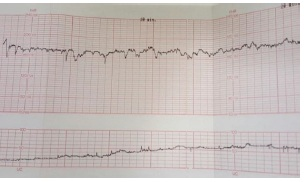
A Indicar parto com 34 semanas de gestação.
B Programar parto no termo precoce.
C Aguardar termo tardio.
D Aguardar até 40 semanas de gestação.
Questão 4 · Segundo periodo expulsivo · 4000140853Com base nas novas orientações de cuidados no parto, o que se pode dizer a respeito da indicação do procedimento ilustrado na figura a seguir?
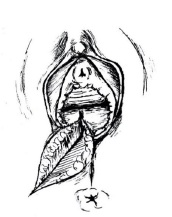
A É praticado se houver risco de lacerações graves.
B Trata-se de um procedimento proscrito.
C Está reservado para primigestas.
D É indicado apenas em partos instrumentalizados.
Questão 5 · Diagnóstico na gestação · Tratamento da toxoplasmose na gestação · Obstetrícia · 4000140852Gestante de 23 anos de idade está em sua primeira gestação. Iniciou o pré-natal com 19 semanas de gestação. Está em acompanhamento irregular na UBS pois trabalha como atendente em um pet Shop e está sem tempo para as consultas. Vem encaminhada ao pré-natal de alto risco com 25 semanas de gestação com os exames descritos a seguir. Qual é a conduta pré-natal imediata?
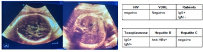
A Iniciar ácido fólico em dose dobrada.
B Iniciar pirimetamina associada a sulfadiazina.
C Iniciar espiramicina isolada.
D Iniciar espiramicina associada a pirimetamina.
Questão 6 · Imunizaçao na gestação · 4000140851Paciente secundigesta está em acompanhamento pré-natal. Teve um parto vaginal há dois anos, quando tinha 16 anos de idade. O cartão de vacinação da paciente está apresentado a seguir. Além de vacina para gripe, qual conduta deve ser feita para a vacinação dessa paciente?
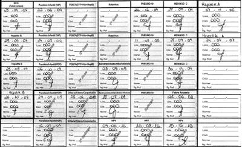
A Administrar uma dose imediata de dT e outra de dTpa após 60 dias.
B Administrar uma dose de dTpa no 2º trimestre.
C Administrar uma dose de reforço para hepatite B.
D Não há necessidade de administrar outras doses vacinais.
Questão 7 · Parto vaginal operatório · Partograma · Avaliação da vitalidade f etal intraparto · 4000140850Primigesta de 21 anos de idade, está com 38 semanas de gestação e iniciou trabalho de parto espontâneo. O partograma e a cardiotocografia estão apresentados a seguir. Qual é o método indicado para ultimação do parto?


A Abreviação com vácuo extrator.
B Cesárea segmentar transversa.
C Aguardar parto espontâneo.
D Rotação com fórcipe Kielland.
Questão 8 · Cardiotocograf ia intraparto · Obstetrícia · 4000140849Primigesta de 21 anos de idade, está com 38 semanas de gestação e iniciou trabalho de parto espontâneo. O partograma e a cardiotocografia estão apresentados a seguir. A fisiopatologia do traçado da cardiotocografia apresentado inclui:


A Compressão funicular.
B Compressão do pólo cefálico.
C Bloqueio átrio ventricular fetal.
D Acidemia fetal
Questão 9 · Inf ecção puerperal endometrite puerperal · Partograma · 4000140848Paciente hígida foi submetida a maturação de colo com misoprostol e posterior indução de parto por pós-datismo, conforme partograma apresentado. Paciente evoluiu com dor e di culdade de deambulação no pós-parto, necessitando analgésico de resgate. No 2º dia pós- parto, apresenta temperatura oral aferida de 38,6 C. No exame clínico, está em bom estado geral e eupneica. O abdome é doloroso à palpação, com sinal de descompressão brusca negativo e ruídos hidroaéreos presentes. A ferida cirúrgica tem bom aspecto. A loquiação é fétida. A conduta inicial indicada para essa paciente é:
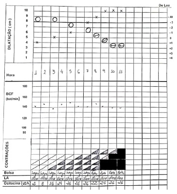
A Administrar antibiótico.
B Aspirar restos ovulares.
C Anticoagulação plena.
D Histerectomia subtotal.
Questão 11 · Eclâmpsia · 4000140846Gestante de 25 anos de idade, primigesta, com 33 semanas e 3 dias de gravidez, chega ao pronto atendimento obstétrico em crise convulsiva tônico-clônica generalizada. O companheiro refere que a paciente estava com dor de cabeça intensa antes da convulsão. No exame clínico, está em mau estado geral, descorada +/4, hidratada, Pressão arterial 152 x 105 mmHg, FC 92 bpm, FR 18 ipm, Saturação 96%, edema de MMII de 3+/4. No exame obstétrico, AU 33 cm, BCF presente e rítmico, dinâmica uterina presente (2 contrações em 10 minutos), toque vaginal com colo dilatado 3 cm, médio, medianizado. Após o tratamento adequado, com estabilização do quadro clínico e avaliação laboratorial, a conduta obstétrica é:
A Cesárea imediata.
B Inibição do trabalho de parto.
C Condução do parto.
D Cesárea após corticoterapia.
Questão 12 · Colagenoses na gestação Lupus eritematoso Sistêmico LES · Lúpus Eritematoso Sistêmico LES · 4000140845Fertilidade gravidez e anticoncepção Gestante de 32 anos de idade, secundigesta e primípara, vem para a primeira consulta de pré-natal com 8 semanas e 2 dias de gestação. Está preocupada pois tem lúpus eritematoso sistêmico com acometimento cutâneo, articular e hematológico. Refere última crise há 7 meses e está em uso de hidroxicloroquina 400 mg e prednisona 10 mg por dia. Qual é a orientação com relação ao uso de hidroxicloroquina e prednisona na fase inicial da gestação?
A Deve suspender Hidroxicloroquina.
B Deve manter ambas as medicações.
C Deve suspender os dois medicamentos.
D Deve suspender a Prednisona.
Questão 13 · Conização · Sintomas · Exame f ísico · 4000140844Paciente de 40 anos de idade refere corrimento vaginal sanguinolento e odor pronunciado há cerca de 5 meses. Refere ciclos menstruais mensais regulares, porém com di culdade de identi cá-los devido ao sangramento irregular dos últimos meses. Refere vida sexual ativa, com parceiro sexual vasectomizado. Quatro partos vaginais prévios (último há 7 anos). Nega co-morbidades ou uso de medicamentos. Ao exame especular observa-se a imagem a seguir. Qual é a conduta neste momento?

A Biópsia.
B Colpocitologia.
C Colposcopia.
D Pesquisa de Clamídia e Neisseria.
Revisar: possível letra faltando em enunciado
Questão 14 · Tratamento do endometrioma de ovário · 4000140843Paciente 23 anos de idade teve diagnóstico de tumoração anexial e foi submetida a laparoscopia. É nuligesta. A imagem da cirurgia é apresentada. Qual a conduta adequada?
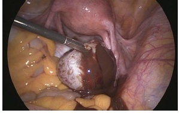
A Ooforectomia.
B Salpingo-ooforectomia.
C Lavado extenso da cavidade com hemostasia ovariana.
D Retirada da cápsula com preservação do ovário.
Questão 15 · Complicações · Tratamento · 4000140842Paciente de 25 anos de idade vem ao Pronto-Socorro por dor aguda abdominal e pélvica há 2 dias. A dor é em pontada e localizada na fossa ilíaca direita. Teve início abrupto, com piora progressiva. É nuligesta e tem ciclos menstruais mensais regulares. Usa preservativo irregularmente nas relações sexuais. No exame clínico, PA 100/60mmHg, FR 14 ipm, FC 100 bpm, Temperatura axilar 38oC. Abdome levemente distendido com descompressão brusca em fossa ilíaca direita. No exame especular observa-se conteúdo acinzentado sem odor. No toque vaginal, o útero está em anteverso exão e há tumoração anexial direita dolorosa. A ultrassonografia transvaginal apresentada a seguir representa a região anexial direita. Qual é a conduta adequada?
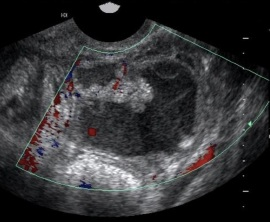
A Drenagem guiada por ultrassom.
B Apendicectomia.
C Salpingo-ooforectomia.
D Destorção anexial.
Questão 16 · Fatores de risco · 4000140841Paciente de 32 anos de idade apresenta mutação BRCA 1 e BRCA 2. É nuligesta. Realizou a pesquisa de mutação pois a mãe faleceu por de câncer de mama aos 45 anos. Segundo o gráfico apresentado ( observa-se o risco cumulativo de câncer de mama em portadoras destas mutações. Qual é a orientação para a paciente?

A A adenomastectomia profilática deve ser realizada.
B A penetrância desses genes é variável.
C O rastreamento em intervalos mais curtos previne a doença
D Uso de tamoxifeno ou raloxifeno pode interferir neste risco.
Questão 17 · Tratamento do sangramento uterino anormal agudo · 4000140840Paciente de 45 anos de idade apresenta sangramento menstrual excessivo há 3 dias acompanhado de intensa dor em cólica. PA 100/60mmHg, FC 100bpm, FR 12 ipm. Exame especular com sangramento ativo pelo colo uterino. No toque vaginal, o útero é regular, com volume habitual e não doloroso à mobilização. Qual é a conduta?
A Histeroscopia diagnóstica.
B Curetagem uterina.
C Progesterona dose elevada.
D Histerectomia.
Questão 18 · Benef ícios · 4000140839Mulher de 17 anos de idade vem ao ambulatório desejando utilizar método contraceptivo que não dependa de “lembrar de usar”. É nuligesta e seus ciclos menstruais são mensais, regulares e com uxo mais intenso no primeiro dia. Tem cólica menstrual, que melhora após uso de naproxeno. Não tem parceiro sexual definido. Em sua unidade de saúde estão disponíveis, além de preservativos, contraceptivos hormonais orais combinados, implantes subdérmicos de etonogestrel e dispositivos intrauterinos (DIUs) de cobre. Qual é a conduta para esta paciente?
A Indica o implante de etonogestrel pela eficácia e efeito sobre o ciclo menstrual.
B Orienta utilizar contraceptivo hormonal oral combinado por ser mais eficaz que o implante e o DIU disponíveis.
C Sugere usar DIU de cobre por ser mais adequado ao padrão menstrual relatado.
D Solicita o acompanhamento do responsável para definir a melhor contracepção.
Questão 19 · Bisf osf onatos · Terapia hormonal da menopausa · Atividade f ísica · 4000140838Paciente de 64 anos de idade vem ao ambulatório trazendo resultado de densitometria óssea realizada no último mês, apresentada a seguir. Está assintomática, refere dieta balanceada, não tem antecedentes mórbidos relevantes e não usa medicamentos. Teve menopausa aos 53 anos de idade e não faz terapia hormonal. Qual é a conduta adequada?
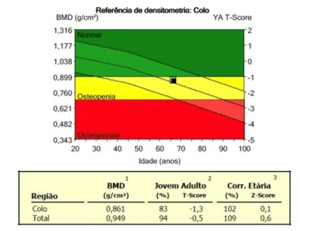
A Terapia hormonal.
B Alendronato.
C Cálcio.
D Atividade física.
Questão 20 · Maturação sexual no sexo f eminino · Pediatria · 4000140837Paciente 9 anos é trazida pela mãe em virtude do aparecimento de nódulo mamário dolorido à direita. A mãe tem 42 anos de idade e encontra-se em tratamento quimioterápico para câncer de mama. O avô materno faleceu devido a câncer de próstata aos 80 anos. No exame clínico da criança, a altura e o peso encontram-se no percentil 50. Presença de leve pili cação genital e axilar bilateral; genitália com vulva e introito vaginal normais, com hímen íntegro. Presença de nódulo broelástico retroareolar direito com cerca de 1cm, parcialmente aderido à aréola e levemente doloroso. Região mamária e aréola esquerda sem achados palpatórios. O restante do exame clínico é normal. A ultrassonogra a da aréola direita é apresentada. Qual é a conduta?

A Punção com agulha fina.
B Punção com agulha grossa.
C Acompanhamento clínico.
D Biópsia excisional.
Questão 21 · Tratamento · 4000140836O gráfico abaixo apresenta a evolução da taxa de detecção de uma infecção sexualmente transmissível, no Brasil. Qual é o tratamento adequado a esta doença?
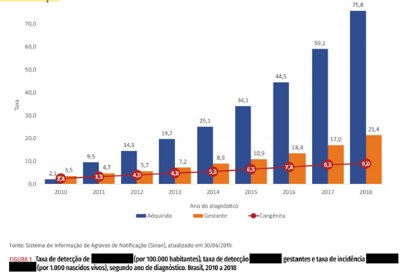
A Aciclovir.
B Penicilina.
C Azitromicina.
D Podofilina.
Questão 22 · Fase f olicular · Ultrassonograf ia · 4000140835Paciente, 23 anos, encontra-se em acompanhamento do ciclo menstrual para tratamento de infertilidade. Realiza a ultrassonografia transvaginal, apresentada abaixo. Qual é o momento do ciclo menstrual desta paciente?
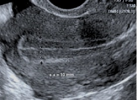
A Fase folicular.
B Fase secretora.
C Menstrual.
D Gravídico.
Questão 23 · Tratamento · 4000140834Paciente de 20 anos é nuligesta e tem ciclos menstruais regulares. Faz uso contínuo de uoxetina 20mg/dia para controle de irritabilidade pré-menstrual há 3 anos. Iniciou vida sexual e utiliza preservativo nas relações. Deseja interromper a fluoxetina para melhorar a libido. Qual é a orientação adequada?
A Suspender gradualmente a fluoxetina e introduzir contraceptivo hormonal combinado.
B Interromper a fluoxetina e iniciar suplementação de testosterona.
C Suspender gradualmente a fluoxetina e suplementar DHEA.
D Interromper a fluoxetina e introduzir benzodiazepínico caso apresente irritabilidade.
Questão 24 · Exames complementares · 4000140833Paciente de 34 anos refere ausência de menstruação há 3 meses. Antes dos três últimos meses, apresentava ciclos menstruais mensais regulares. Tem antecedente de 2 gestações com partos normais, o último há 4 anos. Amamentou por 6 meses cada lho. Usa preservativo como contracepção. Não tem antecedentes mórbidos relevantes e não usa drogas lícitas ou ilícitas. Neste período de 3 meses não observou alteração de hábito intestinal ou urinário, mantém suas atividades pro ssionais e físicas, no entanto tem apresentado leve cefaleia vespertina, dolorimento global das mamas e procurou o oftalmologista por achar que está com menor visão lateral. O teste de gravidez é negativo. Considerando a principal hipótese diagnóstica, qual é a alternativa correta?
A O nível de TSH deve estar diminuído.
B Os níveis de FSH e LH devem estar elevados.
C A biópsia de endométrio deve revelar atrofia.
D O eco endometrial ultrassonográfico deve estar espessado.
Questão 25 · Fraturas do f êmur proximal · 4000140832Qual é o tempo ideal para a realização de fixação das fraturas intertrocantéricas?
A Primeira hora após o trauma.
B 1 a 12 horas após o trauma.
C 12 a 48 horas após o trauma.
D 48 a 72 horas após o trauma.
Questão 26 · Agentes de Indução · Agentes Intravenosos · Cirurgia · 4000140828Mulher de 28 anos de idade está no Pronto-Socorro com diagnóstico de pielonefrite obstrutiva. Será submetida à passagem de cateter duplo-J. Tem medida de pressão arterial em 110/70 mmHg, frequência respiratória de 25 ipm, frequência cardíaca em 120 bpm e está sonolenta. Qual hipnótico NÃO deve ser utilizado na indução da anestesia geral com manobra de sequência de intubação rápida desta paciente?
A Etomidato.
B Cetamina.
C Midazolam.
D Propofol.
Questão 27 · Complicações · Cirurgia · 4000140824Homem de 62 anos de idade realizou a tomogra a de abdome abaixo para a investigação de pneumatúria. É tabagista, com carga tabágica de 30 maços-ano. Tem antecedente de infecção urinária de repetição. Qual é o diagnóstico mais provável?
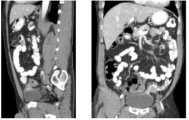
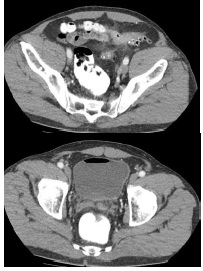
A Tumor urotelial da bexiga avançado.
B Cistite enfisematosa com abscesso.
C Doença diverticular complicada.
D Tumor de reto avançado.
Questão 28 · Estadiamento · 4000140819Mulher de 56 anos de idade está em investigação de icterícia obstrutiva e realiza o exame a seguir. A lesão presente na imagem tem contato com qual estrutura vascular?
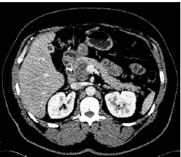
A Artéria mesentérica superior.
B Veia cava inferior.
C Tronco celíaco.
D Veia mesentérica superior.
Questão 30 · Tratamento Cirúrgico da DRGE · 4000140811Mulher de 47 anos de idade realiza acompanhamento no Ambulatório Médico de Especialidade devido a diabete e hipertensão arterial. Apresenta re uxo gastresofágico e foi submetida a endoscopia digestiva alta há 1 mês que revelou esofagite grau C de Los Angeles. Está em uso de omeprazol 40mg por dia há 6 meses, mas com persistência de pirose pós prandial, principalmente quando em decúbito horizontal. Exame clínico: bom estado geral, IMC: 36 kg/m2, abdome indolor à palpação, sem outras alterações. Qual é a melhor opção operatória para o tratamento do refluxo gastro-esofágico desta paciente?
A Gastrectomia vertical (sleeve gástrico).
B Gastroplastia com derivação em
C Hiatoplastia com fundoplicatura total.
D Hiatoplastia com fundoplicatura parcial.
Questão 31 · Pólipos da Vesícula Biliar · 4000140805Mulher de 62 anos de idade realizou um ultrassom de abdome superior no qual se evidenciou um pólipo em vesícula biliar de 1,5 cm, com fluxo sanguíneo detectado ao doppler. Não tem sintomas. Qual é a melhor conduta para o caso?
A Colecistectomia por via videolaparoscópica.
B Colecistectomia por via aberta.
C Repetir ultrassom de abdome superior em 6 meses.
D Repetir ultrassom de abdome superior em 12 meses.
Questão 32 · Litotripsia transureteroscópica por ureterorenoscopia · 4000140799Mulher de 32 anos de idade chega ao pronto atendimento com dor em anco e fossa ilíaca esquerdos, em cólica, de forte intensidade, acompanhada de náuseas, vômitos e sudorese que se iniciou há 1 hora. Refere ser este o 5º episódio em cinco dias, tendo já estado em outro pronto atendimento por quatro vezes, onde foi medicada e apresentou melhora temporária da dor. Após analgesia, apresenta-se afebril, PA=140X80 mm Hg, FC: 76 bpm. O abdome é ácido, doloroso à palpação profunda na fossa ilíaca esquerda. RHA + e DB -. Foi submetida a tomogra a computadorizada sem contraste e exames de laboratório, mostrados a seguir: Hb: 13.8 g/dl; Leucócitos: 8.800/mm3, sem desvio à esquerda; Creatinina: 1,1 mg/dl; Glicemia: 94 mg/dl. Urina tipo I: pH=5,0; > 1 milhão de hemácias/ml; 32 mil leucócitos/ml. Qual é o tratamento?
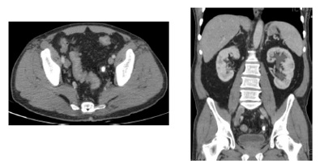
A Tamsulosina e cefalexina por 7 dias.
B Ureterolitotomia por via laparoscópica.
C Ureterolitotripsia endoscópica.
D Ureterolitotomia por inguinotomia.
Questão 33 · Classif icação de NPUAP e Tratamento · Cirurgia · 4000140796Paciente de 65 anos, sexo masculino, previamente hígido, foi acometido pelo vírus Sars Cov-2, permaneceu internado por tempo prolongado e desenvolveu úlcera de pressão em região sacral. A lesão acometia toda pele e parcialmente o tecido subcutâneo. Qual é a classificação desta úlcera pelo NPUAP ( tratamento?
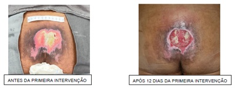
A Grau III. Desbridamento e curativo diário com antibiótico tópico, aguardar cicatrização por segunda intenção.
B Grau III. Desbridamento c/ instalação de curativo por pressão negativa, retalho fasciocutâneo de avanço ou rotação.
C Grau IV. Desbridamento c/ instalação de curativo por pressão negativa, enxertia cutânea de espessura total.
D Grau IV. Desbridamento c/ instalação de curativo por pressão negativa, retalho fasciocutâneo de avanço ou rotação.
Questão 34 · Tratamento · 4000140793Neonato prematuro com idade gestacional de 30 semanas e peso de nascimento de 1.200g apresenta no quarto dia de vida quadro de hipoatividade, vômitos biliosos e distensão abdominal importante. Estava extubado, sem droga vasoativa, com boa perfusão periférica e diurese. Houve ainda evacuação com pequena quantidade de sangue. O exame abdominal revelava abdome distendido e doloroso à palpação, com discreta hiperemia periumbilical. Foi então submetido a uma radiografia de abdome que revelou a seguinte imagem: A conduta mais adequada neste momento seria:
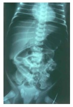
A Indicar uma laparotomia exploradora.
B Realizar uma tomografia de abdome.
C Repetir a radiografia de abdome em 6 horas.
D Iniciar jejum, antibioticoterapia de largo espectro e observar a evolução.
Questão 35 · Cirurgia · Tratamento · 4000140792Homem de 65 anos de idade desenvolveu subitamente amaurose no olho esquerdo. O sintoma foi revertido em poucos minutos, mas voltou a ocorrer algumas horas depois, e na segunda oportunidade durou 2 horas. Tem doença arterial periférica e faz tratamento com antiagregantes plaquetários e estatinas. Foi realizada ultrassonogra a com doppler colorido que mostrou estenose carotídea maior que 50% bilateralmente. A conduta que mais diminui o risco de acidente vascular cerebral neste caso é:
A Angioplastia com Stent em carótida direita.
B Angioplastia com Stent em carótida esquerda.
C Endarterectomia de carótida direita.
D Endarterectomia de carótida esquerda.
Questão 36 · Benignas · 4000140791Mulher de 42 anos de idade procura atendimento por nódulo em hemiface esquerda, próximo ao ângulo da mandíbula, há 6 meses. Nega dor local, vermelhidão ou assimetria facial (foto abaixo). Considerando se tratar de um nódulo em cauda de parótida esquerda, qual é o tipo histológico mais provável?
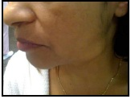
A Carcinoma mucoepidermoide.
B Adenoma pleomórfico.
C Carcinoma adenoide cístico.
D Cistoadenoma papilífero linfomatoso.
Questão 37 · Hiperparatireoidismo secundário · 4000140789Uma paciente mulher de 67 anos de idade é atendida no ambulatório da cirurgia de cabeça e pescoço e apresenta os seguintes exames laboratoriais: USG RINS E VIAS URINÁRIAS Qual o melhor tratamento para a principal hipótese diagnóstica para o caso?
A Paratireoidectomia total com auto-enxerto.
B Diurético de alça e seguimento clínico.
C Exérese da paratireoide afetada.
D Paratireoidectomia subtotal e timectomia.
Questão 38 · Cirurgia · Hérnia Femoral · 4000140785Mulher, 54 anos de idade, refere quadro de dor e abaulamento na região inguinocrural à direita há 2 meses, desencadeados aos esforços. Ao exame físico, observa-se abaulamento na região inguinocrural à direita ( figura a seguir), à manobra de Valsalva, com redução ao repouso. Com relação a este tipo de hérnia, qual é a alternativa correta?
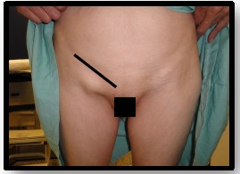
A A técnica de Lichtenstein é a melhor conduta.
B Quando encarcerada, o acesso deve ser por via inguinal e abdominal.
C Quando operada de urgência tem elevada mortalidade.
D Trata-se do defeito mais comum da parede abdominal
Questão 39 · Síndrome de Realimentação · Cirurgia · 4000140783Homem de 39 anos de idade foi transferido para um hospital terciário por apendicite aguda complicada, seguida de múltiplas laparotomias exploradoras que evoluíram com fístulas intestinais de alto débito. Na admissão encontra-se em regular estado geral, com índice de massa corpórea de 11,8 kg/m². Calculado o gasto basal de energia: 1500 kcal. Foi proposto iniciar dieta parenteral. Qual é o aporte calórico que deve ser prescrito neste momento e quais são os distúrbios eletrolíticos mais prováveis após o início do tratamento?
A 450 kcal; hipofosfatemia e hipopotassemia.
B 450 kcal; hipocalcemia e hiponatremia.
C 1500 kcal; hipofosfatemia e hipopotassemia.
D 1500 kcal; hipocalcemia e hiponatremia.
Questão 40 · Trauma Abdominal Fechado · Traumatismo Retroperitoneal · Cirurgia · 4000140779Homem de 31 anos de idade teve queda de andaime a 5 metros de altura. Foi intubado no atendimento pré-hospitalar por estar inconsciente. Chegou ao Serviço de Emergência após 40 minutos do trauma. No exame na sala de admissão encontrava-se: A: Intubado com Sat. O2 de 95% B: Múrmurio vesicular diminuído na base direita C: PA: 130x70 mmHg; FC: 90 bpm; FAST positivo nos espaços hepatorrenal e pelve D: Escala de Glasgow de 3 (sob sedação) E: Sem outras alterações A tomogra a de corpo inteiro mostrou a presença de contusão cerebral, para qual optou-se por observação, monitorização da pressão intracraniana e controle de imagem em 6 horas. A seguir a imagem da tomografia de abdome: Qual é a conduta para os achados da tomografia de abdome?
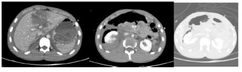
A Tratamento não operatório.
B Arteriografia com embolização.
C Laparoscopia diagnóstica
D Laparotomia exploradora.
Questão 41 · Trauma Hepático · Cirurgia · 4000140776Mulher de 29 anos de idade foi admitida no Serviço de Emergência devido à queda de motocicleta. Foi realizada tomografia de abdome (imagem a seguir). Foi proposto tratamento não operatório e encaminhada para unidade de terapia semi-intensiva. No 5o dia pós-trauma apresentou vários episódios de melena. No exame clínico encontra-se descorada, FC: 110 bpm, PA: 100x60mmHg e dor à palpação profunda do hipocôndrio e anco direito. Queda da hemoglobina de 9,8 g/dL para 6,3 g/dL. Recebeu 2 concentrados de hemácias com melhora dos parâmetros hemodinâmicos. Realizada endoscopia digestiva alta que evidenciou gastrite no antro, sem sinais de sangramento. Qual é o próximo exame que deve ser feito para definir a etiologia do sangramento?
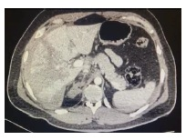
A Colonoscopia.
B Angiotomografia.
C Enteroscopia alta.
D Cápsula endoscópica.
Questão 42 · Tomograf ia Computadorizada de Abdome · Outros Exames de Imagem · Outros Exames Laboratoriais · 4000140774Mulher de 33 anos de idade é encaminhada a hospital terciário devido a dor abdominal de forte intensidade há 36 horas. Refere início da dor na região superior do abdome, que depois tornou-se difusa. Apresentou vômitos e náuseas, porém sem alteração do hábito intestinal. Nega febre. No exame clínico, está em regular estado geral, Sat.O2 de 89%, FC: 100 bpm, FR: 20 ipm, PA: 100x60mmHg. Ausculta pulmonar diminuída na base esquerda. O abdome está levemente distendido, doloroso difusamente, com sinais de irritação peritoneal no andar superior do abdome. O toque retal não tem alterações. Realizados os seguintes exames laboratoriais: Hb: 11,3 g/dL; Ht: 31%; Leucócitos: 16.320 /mm3; PCR: 170 mg/dL; Creatinina: 1,18 mg/dL; Ureia: 55 mg/dL; TGO: 290 U/L: TGP: 313 U/L; BD: 1,9 mg/dL; FA: 145 U/L; GGT: 123 U/L; Amilase: 1280 U/L; Lipase: 2500 U/L. Realizado ultrassom de abdome superior: vesícula biliar distendida, paredes nas, microcálculos móveis no interior; via biliar de 0,8cm (normal até 0,5cm), porém não visualizado o colédoco distal nem o pâncreas devido a interposição gasosa. Está indicada a realização de exame de imagem adicional neste momento?
A Não está indicada a realização de exame.
B Sim, está indicada tomografia de abdome.
C Sim, está indicada colangioressonância.
D Sim, está indicada ecoendoscopia.
Questão 43 · Colangiograf ia Intraoperatória · Cirurgia · 4000140772Mulher de 39 anos de idade está internada devido a pancreatite aguda biliar. Foi indicada colecistectomia laparoscópica após resolução da pancreatite. Durante a operação, que até o momento transcorreu sem intercorrências, foi realizado o exame a seguir. Qual deve ser a conduta neste momento?
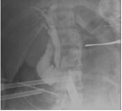
A Realizar colangiografia endoscópica no intraoperatório.
B Finalizar a colecistectomia por laparoscopia.
C Realizar exploração transcística da via biliar por laparoscopia.
D Converter para laparotomia e exploração por coledocotomia.
Questão 44 · Pneumotórax Hipertensivo · 4000140770Mulher de 37 anos de idade se jogou do 4o andar do prédio em que mora. No atendimento pré-hospitalar estava inconsciente e foi realizada intubação orotraqueal. O exame de admissão na sala de trauma apresenta: A: Intubação orotraqueal. Saturação de O2 de 83% B: Equimose torácica na região da linha axilar média direita. Murmúrio vesicular diminuído à direita. Realizada a drenagem torácica com saída de grande quantidade de ar e 200ml de sangue. No selo d’água observa-se oscilação e presença de borbulhamento. Saturação de O2 de 91% após a drenagem. C: FC: 100; PA: 120x80mmHg. FAST negativo D: Escala de Glasgow de 3. Sedada no transporte. Pupilas isocóricas e fotorreagentes E: Deformidade na coxa direita. Ao retornar da tomogra a de corpo inteiro para sala de trauma apresentou queda da saturação de O2 para 71% e FC de 120 bpm e PA: 80x50 mmHg. Qual é a conduta?
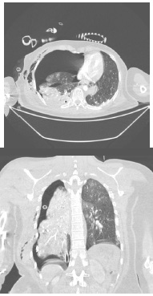
A Introduzir um segundo dreno de tórax.
B Puncionar no segundo espaço intercostal.
C Reavaliar o dreno de tórax.
D Realizar toracotomia de urgência.
Questão 45 · Terapia de reposição de hemoderivados · Cirurgia · Estratégias para controle de hemorragia · 4000140768Mulher de 23 anos de idade, caiu de motocicleta em via expressa. Chega ao Serviço de Emergência após 30 minutos do acidente, trazida pela equipe de Resgate. Na avaliação de admissão na sala de trauma apresenta-se: A: Conversando. Saturação de O2 93% B: Ausculta pulmonar sem alterações. Ausência de deformidade no tórax C: PA: 80x50mmHg; FC: 120bpm; FAST positivo no espaço hepatorrenal D: Escala de Glasgow de 15, porém agitada E: Equimose no flanco e hipocôndrio direitos Após a infusão de 1L de soro siológico (SF), apresentou PA: 90x60mmHg e FC de 105bpm. Com relação ao tratamento do choque hemorrágico desta paciente, qual é a melhor estratégia na sala de trauma?
A Complexo protrombínico, concentrado de hemácias e plasma fresco congelado.
B Ácido tranexâmico, reposição guiada por tromboelastograma e reposição de cálcio.
C Infusão de mais 1 L de SF, reposição guiada por tromboelastograma e fibrinogênio.
D Ácido tranexâmico, concentrado de hemácias e reposição de cálcio.
Questão 46 · Fístulas Intestinais · Cirurgia · 4000140766Mulher de 73 anos de idade, está no 5o pós-operatório de gastrectomia subtotal com reconstrução à Billroth II devido a hemorragia digestiva alta por úlcera pilórica. Encontra-se em leito de semi-intensiva, recebendo tratamento sioterápico (respiratório e motor). Está deambulando no corredor com auxílio. Introduzida dieta com água, chá e gelatina há um dia, com boa aceitação e sem vômitos. Equipe da enfermagem notou que o débito do dreno no anco direito mudou de característica (imagem a seguir) nas últimas 24 horas, com débito de 110mL. Ao exame físico está em bom estado geral, FC: 80 bpm, PA: 130x80 mmHg, afebril, FR: 18 ipm. Semiologias pulmonar e cardíaca sem alterações. Abdome com incisão da laparotomia mediana de bom aspecto, ácido, pouco doloroso à palpação, sem irritação peritoneal. Dreno no anco direito conforme imagem (cerca de 90mL). Exames Laboratoriais: Hb: 9,7 g/dL; Ht: 30%; Leuco: 11.570/mm3, PCR: 43 mg/dL; função renal normal. Qual é a principal hipótese diagnóstica e conduta neste momento?
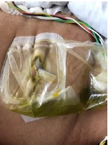
A Fístula do coto duodenal; manter dieta via oral.
B Fístula do coto duodenal; laparotomia exploradora.
C Fístula da gastroentero anastomose; nutrição parenteral.
D Fístula da gastroentero anastomose; tratamento endoscópico.
Questão 47 · Trombose Venosa · Cirurgia · 4000140761Homem de 49 anos de idade refere dor abdominal difusa há 4 dias com piora da intensidade nas últimas 24 horas. Evoluiu com distensão abdominal e um episódio de vômito, sendo a última evacuação, em pequena quantidade, há 2 dias. Tem antecedente de embolia pulmonar há 7 anos e fez uso de varfarina por 2 anos com interrupção por conta própria. Um irmão teve trombose venosa profunda. No exame clínico, está em bom estado geral, desidratado, PA: 110x70mmHg, FC: 102bpm, FR: 16 ipm. Semiologias cardíaca e pulmonar normais. Abdome: distendido, doloroso à palpação difusamente, sem sinais de irritação peritoneal. No toque retal, há fezes na ampola e ausência de sangue. Exames laboratoriais: Hb: 12,7g/dL; Ht: 34%; Leucócitos: 14.678/mm3; PCR: 249mg/dL; Creatinina: 1,1mg/dL; Ureia: 41mg/dL. Realizada a tomografia de abdome: Qual é a conduta neste momento?
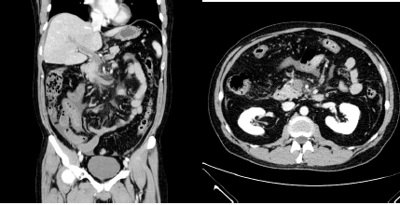
A Laparotomia.
B Tratamento endovascular.
C Trombólise.
D Anticoagulação plena.
Questão 48 · Tratamento Cirúrgico · 4000140756Homem de 59 anos de idade procura o Serviço de Emergência com dor abdominal em cólica, difusa, há 3 dias, associada a distensão abdominal e parada de eliminação de gases e fezes. Refere alteração do hábito intestinal há 3 meses, com necessidade de laxativos para evacuar, além de sangue nas fezes e alteração do formato. Nega vômitos. Não tem antecedentes mórbidos relevantes e nega operações prévias. Ao exame físico está em bom estado geral, corado, desidratado, IMC: 31kg/m2. Semiologias cardíaca e pulmonar normais. Abdome: ácido, distendido, pouco doloroso à palpação, sem sinais de irritação peritoneal e sem massas palpáveis. No toque retal, ausência de fezes na ampola, presença de lesão ulcerada circunferencial a 6 cm da borda anal e presença de sangue. Realizada tomogra a de abdome e pelve: ausência de lesões hepáticas, sem liquido livre. Distensão apenas de cólon e espessamento do reto médio distal com linfonodos aumentados no mesorreto. Qual é a conduta?
A Ileostomia em alça por laparotomia.
B Retossigmoidectomia oncológica e colostomia terminal.
C Colostomia em alça por laparotomia.
D Amputação de reto com linfadenectomia.
Questão 49 · Controle dos comunicantes · 4000140754Lactente do sexo feminino, 18 meses de idade, previamente hígida, chega à Unidade Básica de Saúde para atendimento. O pai foi diagnosticado com tuberculose pulmonar há 20 dias e está em tratamento regular com esquema quádruplo. A criança está assintomática e com exame clínico normal. Apresenta radiogra a de tórax sem alteração e Prova Tuberculínica de 6 mm. Carteira vacinal registra BCG ao nascimento, porém não há cicatriz no local da aplicação da vacina. De acordo com o protocolo do Ministério da Saúde, a conduta para esta criança será:
A Prescrever tratamento com esquema tríplice.
B Iniciar quimioprofilaxia com rifampicina.
C Repetir Prova Tuberculínica em 8 semanas.
D Fazer BCG e observar clinicamente.
Questão 50 · Programa Nacional de Imunizações · Pediatria · Calendário inf antil · 4000140753Recém-nascido do sexo feminino, nascida de 33 semanas de idade gestacional e com peso de 1.800 g ao nascer, é admitida em Unidade de Cuidados Intermediários logo após o parto. Mãe HBsAg negativa. Sobre a vacinação para a hepatite B, baseado no Programa Nacional de Imunizações (PNI) é correto a rmar que a vacina deve ser aplicada:
A Imediatamente, no mesmo esquema atualmente preconizado pelo PNI para crianças de termo.
B Após ultrapassar o peso de 2.000 g, realizando uma dose extra após 30 dias (5 doses no total).
C Após atingir 36 semanas de idade gestacional corrigida, realizando uma dose extra após 30 dias (5 doses no total).
D Após 30 dias de vida, no mesmo esquema atualmente preconizado pelo PNI para crianças de termo.
Questão 51 · Alta hospitalar do RN · Pediatria · Exames laboratoriais · 4000140752Recém-nascido (RN) do sexo masculino, 5 dias de vida, está internado em Unidade de Cuidados Intermediários para manejo de icterícia neonatal. Mãe com tipagem sanguínea O positivo, RN com tipagem AB positivo, Coombs negativo, Eluato positivo. Evoluiu com icterícia neonatal precoce e foi iniciada fototerapia com 20 horas de vida. Hoje colheu bilirrubinas, cujos níveis indicaram a suspensão da fototerapia. Foi indicada a alta hospitalar. Ao orientar a família, mãe refere que a criança está um pouco mais irritada. Foi notada hiperemia peri-umbilical conforme figura abaixo, com saída de secreção malcheirosa pelo coto. Está indicado neste momento:
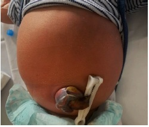
A Manter a alta hospitalar, orientar reforçar higiene do coto umbilical com álcool 70% e retornar se houver piora clínica.
B Decidir sobre necessidade de internação e antibioticoterapia baseado no índice neutrofílico e na proteína C reativa.
C Cancelar a alta hospitalar, rastreamento infeccioso incluindo coleta de líquor e iniciar antibioticoterapia endovenosa empírica.
D Manter a alta hospitalar, introduzir tratamento tópico com nitrato de prata e retorno obrigatório em 48 horas para reavaliação.
Questão 52 · Neuropediatria · Pediatria · Diagnósticos dif erenciais · 4000140748Recém-nascido (RN) do sexo feminino, nascido de termo, com peso adequado para a idade gestacional, está no 8º dia de vida. O parto foi vaginal e com extração difícil. O RN nasceu hipotônico e em apneia, sendo necessário intubação orotraqueal em sala de parto. A mãe tem 27 anos de idade, era previamente hígida e não teve intercorrências no pré-natal. O RN permaneceu 5 dias em UTI, e atualmente está na Unidade de Cuidados Intermediários, recebendo ampicilina e amicacina para tratamento de sepse neonatal precoce presumida. Recebe dieta por sonda nasogástrica devido a sucção débil, e está em treinamento com a equipe de fonoaudiologia. Neste momento, apresenta quadro súbito de movimentos ritmados de mãos e pés, com hipertonia, cianose, eversão do olhar e sialorreia. A equipe responsável pelo cuidado instala monitorização contínua e inicia oferta de oxigênio a 100%. A glicemia capilar é de 72 mg/dL. Com a manutenção do quadro apresentado, está indicada a prescrição imediata de:
A Soro glicosado a 10% em bolus.
B Dose de ataque de fenobarbital.
C Reposição empírica com gluconato de cálcio.
D Midazolam ou diazepam em bolus.
Questão 53 · Pediatria · Ventilação com pressão positiva · 4000140746Recém-nascido (RN) do sexo feminino, termo tem peso adequado para a idade gestacional (3.200g) É lha de mãe primigesta de 31 anos de idade. Não houve intercorrências no pré-natal. Foi feito parto cesáreo, devido sofrimento fetal agudo. O RN nasceu em apneia, cianótico e hipotônico. Foi levado à mesa de reanimação com fonte de calor, onde foi secado, estimulado e teve a via aérea reti cada. Evoluiu com respiração irregular e presença 8 batimentos cardíacos no período de 6 segundos. Após monitorização da frequência cardíaca (FC) e da saturação, iniciou-se ventilação com pressão positiva (VPP) com FiO2 de 21%. Após 30 segundos de VPP, o RN apresenta respiração regular, FC de 140 bpm e saturação de 70% no membro superior direito. De acordo com as diretrizes de reanimação da Sociedade Brasileira de Pediatria de 2016, o próximo passo é:
A Suspender a VPP e manter o paciente em ar ambiente.
B Rever a técnica da VPP e a vedação adequada da máscara com a face.
C Manter a VPP, mas aumentar a oferta de oxigênio para 50%.
D Realizar a intubação orotraqueal para a ventilação.
Questão 54 · Conduta · Pediatria · 4000140743Recém-nascido do sexo masculino, nascido de termo (37 semanas e 4 dias), pequeno para a idade gestacional, com peso de nascimento de 2000 g, é lho de mãe tabagista, sem outras comorbidades. Com 12 horas de vida, o paciente apresentou controle de glicemia capilar de 32 mg/dL. Optado por realizar push de glicose e deixar soro contínuo com velocidade de infusão de glicose (VIG) de 5 mg/kg/min. Assinale a alternativa que contém a prescrição correta deste soro contínuo:
A Soro glicosado a 5% - 72 mL endovenoso contínuo em 24 horas.
B Soro glicosado a 10% - 240 mL endovenoso contínuo em 24 horas.
C Soro glicosado a 10% - 144 mL endovenoso contínuo em 24 horas.
D Soro glicosado a 5% - 200 mL endovenoso contínuo em 24 horas.
Questão 55 · Antibioticoterapia para sepse neonatal tardia · Medidas Gerais · Pediatria · 4000140742Recém-nascido do sexo masculino, com 15 dias de vida, está em consulta ambulatorial de rotina. Trata-se de criança nascida por parto vaginal, de termo, adequada para a idade gestacional, sem intercorrências perinatais. Família notou aumento progressivo do volume das mamas bilateralmente, com saída de secreção leitosa, sendo que a família tentou esvaziamento, sem sucesso. Atualmente se apresenta conforme imagem abaixo. Sem outras alterações ao exame clínico. A conduta indicada é:
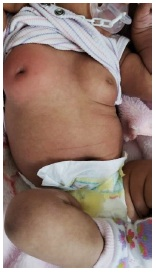
A Liberação para casa com cefalexina, reavaliação em 48 horas, e coleta de prolactina, hormônios: luteinizante (LH), folículo estimulante (FSH) e estimulador da tireoide (TSH).
B Internação hospitalar, introdução empírica de vancomicina e cefepime, biópsia de tecido glandular mamário por agulha fina.
C Liberação para casa com orientação de compressas frias locais, reavaliação em 48 horas, e solicitação de RNM de sela túrcica.
D Internação hospitalar, coleta de hemograma, proteína C reativa, hemocultura e introdução de oxacilina e amicacina.
Questão 56 · Estrabismo · Semiologia motora e sensorial do estrabismo · Of talmopediatria e estrabismo · 4000140728Menina, 3 meses de idade, está em consulta de puericultura. No exame clínico, foi suspeitado da presença de estrabismo. Colocado um feixe de luz na frente dos olhos, observa-se o reflexo luminoso como demonstrado na figura abaixo. Frente a este achado, qual é o diagnóstico e a conduta adequada?
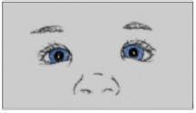
A Estrabismo transitório, encaminhar ao oftalmologista se persistir aos 12 meses de vida.
B Pseudoestrabismo devido a epicanto, sem conduta específica.
C Estrabismo convergente, encaminhar imediatamente para avaliação com oftalmologista.
D Estrabismo verdadeiro, solicitar tomografia computadorizada de crânio.
Questão 57 · Avaliação do Crescimento · Pediatria · 4000140710Menino, 4 anos de idade, comparece na Unidade Básica de Saúde para consulta de rotina. Ao exame clínico, os índices antropométricos na curva da OMS foram: escore z de peso para idade = +2,1; escore z de estatura para idade = -1,9; escore z de índice de massa corpórea (IMCz) = +3,3. De acordo com a classificação da OMS-2006, os parâmetros antropométricos verificados são classificados respectivamente como:
A Peso elevado para a idade, estatura adequada para a idade e obesidade.
B Peso adequado para a idade, estatura baixa para a idade e obesidade grave.
C Peso elevado para a idade, estatura baixa para a idade e obesidade grave.
D Peso adequado para a idade, estatura adequada para a idade e obesidade.
Questão 58 · Orgãos genitais f emininos · Desenvolvimento das mamas · 4000140709Menina, 9 anos de idade, vem à consulta de rotina. O pai está preocupado pois recentemente notou uma nodulação na mama direita da lha. Relata que avó paterna faleceu de câncer de mama aos 49 anos. Ao exame clínico nota-se uma elevação da aréola e papila a direita, formando uma pequena saliência, com palpação broelástica. Sem alterações do lado esquerdo. Sem outras alterações ao exame clínico. A conduta é:
A Solicitar ultrassonografia de mama.
B Solicitar prolactina, TSH e cortisol.
C Manter conduta expectante.
D Realizar punção aspirativa por agulha fina.
Questão 59 · Diagnóstico · Pediatria · 4000140708Menino, 11 anos e 6 meses de idade, está em consulta ambulatorial de rotina. Os pais estão preocupados pois ele é o mais baixo da sala de aula e ainda não apresenta nenhum marco puberal. Refere alimentação balanceada e equilibrada, faz atividade física regular 3 vezes por semana (judô). Sem antecedentes pessoais ou familiares relevantes. Sem alterações relevantes no exame clínico, estádio puberal G1 P1. Estatura de 130 cm (Curva OMS escore Z entre -3 e -2), índice de massa corpórea de 17,2 kg/m2 (Curva OMS escore Z = 0). Na última consulta, realizada há 6 meses, ele apresentava estatura de 127 cm. O pai tem estatura de 182 cm. A mãe tem estatura de 169 cm e refere que apresentou a menarca com 13 anos. O paciente realizou radiografia de punho esquerdo na semana passada, com idade óssea compatível com 9 anos. Qual é a principal hipótese diagnóstica?
A Puberdade atrasada.
B Hipotireoidismo adquirido.
C Deficiência de hormônio de crescimento.
D Retardo constitucional do crescimento.
Questão 60 · Pediatria · 9 meses · 4000140707Menina, 9 meses de idade, nascida a termo, com peso adequado para idade gestacional, sem intercorrências na gravidez ou no parto. Trazida pela mãe ao ambulatório para consulta pediátrica. Mãe sem queixas e nega alterações desde última consulta. Qual achado de exame físico demonstraria possível atraso de desenvolvimento neuropsicomotor?
A Não fica em pé sem apoio.
B Não consegue engatinhar.
C Não ajuda ao ser levantada pelos braços do decúbito dorsal.
D Não fala palavras isoladas.
Questão 61 · Investigação HAS primáriax secundária · Pediatria · 4000140706Menina, 3 anos de idade e 92 cm de estatura, está realizando a primeira medida de pressão arterial da vida. Ela não apresenta obesidade ou qualquer outra comorbidade. O pai é hipertenso, com diagnóstico realizado aos 20 anos de idade. O valor da pressão arterial no membro superior direito foi de 114 x 78 mmHg (média de 3 medidas pelo método auscultatório). No braço esquerdo, o valor foi de 116 x 80 mmHg e, na coxa esquerda, foi de 94 x 58 mmHg. As referências de pressão arterial para a idade estão apresentadas na tabela a seguir. A conduta indicada na consulta de hoje é realizar:
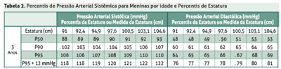
A Nova medida de pressão arterial em 4 a 6 semanas.
B Estudo angiográfico da aorta torácica e abdominal.
C Dosagem de cortisol, renina e ácido vanil-mandélico.
D Ultrassonografia com Doppler de rins e vias urinárias.
Questão 62 · Apresentação Clínica · Otorrinolaringologia · Etiologia e Epidemiologia · 4000140705Menina, 8 anos de idade, há dois dias iniciou quadro de dor intensa no ouvido, que piora com qualquer manipulação no local e saída de secreção purulenta malcheirosa. Tem antecedente de dermatite atópica, refere fazer natação duas vezes por semana e tem o hábito de higienizar os ouvidos com cotonete. Segue abaixo uma imagem da inspeção do local. Qual é o agente etiológico mais provável?
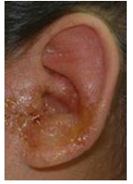
A Haemophilus Influenzae.
B Staphylococcus epidermidis.
C Streptococcus pneumoniae.
D Pseudomonas aeruginosa.
Questão 63 · Tratamento Complicações · Tratamento Geral · Pediatria · 4000140701Menino, 7 anos de idade, previamente hígido, está internado em enfermaria devido à crise asmática associada a pneumonia. Foi internado devido a hipoxemia, estando em ar ambiente há 24 horas. É o quinto dia de internação, mas mantém picos febris diários, hoje com 38,4ºC. Está em uso de ampicilina endovenosa, prednisolona oral e salbutamol inalatório. Ao exame clínico, criança em bom estado geral, com ausculta pulmonar com discretos sibilos, sem sinais de desconforto respiratório, com sopro tubário no terço médio de hemitórax esquerdo e redução de ausculta na base esquerda. Sem outras alterações ao exame clínico. Mãe nota criança mais ativa, com melhora do estado geral e da aceitação alimentar. O paciente colheu exames na entrada, e tem exames de hoje, conforme tabela abaixo. A conduta indicada neste momento é:
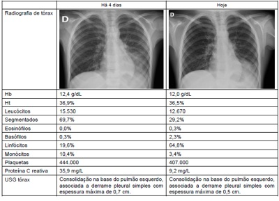
A Manter a internação hospitalar e o tratamento atual.
B Modificar o esquema terapêutico para ceftriaxone e claritromicina.
C Indicar a drenagem torácica devido a persistência da febre.
D Ampliar a investigação infecciosa com coleta de cultura de urina.
Questão 64 · Pediatria · Análise de urina · Diagnóstico laboratorial · 4000140698Menina, 7 meses de idade, previamente hígida, está internada em enfermaria devido a doença diarreica aguda. Há 4 dias, iniciada febre de até 38,3ºC associada a vômitos e diarreia, com 7 a 8 episódios de fezes líquidas sem muco ou sangue. Há 2 dias, deu entrada no Pronto-Socorro com quadro de desidratação grave, recebeu expansão endovenosa, e foi mantida internada com soroterapia endovenosa devido à baixa aceitação alimentar. A soroterapia foi suspensa ontem e hoje a criança está em bom estado geral, hidratada, sem nenhuma alteração ao exame clínico, já em programação de alta hospitalar. A mãe refere que a aceitação oral foi recuperada, e que ainda apresenta 2 a 3 episódios de fezes semipastosas, já sem vômitos e sem novas queixas. Nos controles de enfermagem, notados 2 picos febris acima de 39,0ºC nesta madrugada, sendo que a paciente já estava afebril há 72 horas. O exame que mais provavelmente revelará a causa do retorno da febre é:
A Cultura de fezes.
B Pesquisa de vírus respiratórios.
C Protoparasitológico de fezes.
D Cultura de urina.
Questão 66 · Pediatria · Tratamento · 4000140688Menino, 3 meses de idade, com antecedente de Síndrome de Down, em seguimento regular com endocrinologista e cardiologista por hipotireoidismo e comunicação interatrial, em uso contínuo de levotiroxina, sulfato ferroso e vitamina D. Foi internado hoje devido a um quadro de bronquiolite. Na admissão apresentava FR: 68 irpm, satO2: 89% em ar ambiente, tiragens subdiafragmática e intercostal, sendo colocado em cateter nasal de alto uxo. Os alarmes do monitor tocaram apresentando os seguintes parâmetros: A conduta imediata é:
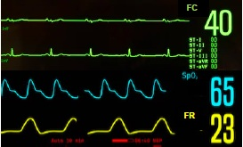
A Desfibrilação com carga de 2 J/kg.
B Administração de atropina endovenosa.
C Iniciar ventilações assistidas.
D Inserção de marca-passo transcutâneo.
Questão 67 · Pediatria · Tratamento da Crise Aguda · 4000140686Menino, 6 anos de idade, com diagnóstico prévio de asma, dá entrada em serviço de emergência referenciada transferido de unidade de pronto atendimento devido à crise asmática. A queixa é de desconforto respiratório há um dia, sem outros sintomas associados. No serviço de origem, o paciente foi admitido em regular estado geral, pálido, hipoativo, com fala entrecortada, FC: 140 bpm, FR: 45 irpm, satO2: 92% em máscara não-reinalante, ausculta pulmonar globalmente diminuída, com tempo expiratório prolongado, tiragem subdiafragmática, intercostal e de fúrcula. Recebeu corticoide sistêmico, além de salbutamol e brometo de ipratrópio inalatórios por uma hora. Após essas medidas, o paciente chega ao serviço atual em regular estado geral, corado, FC: 145 bpm, FR 36 irpm, alerta e orientado, com ausculta pulmonar com murmúrio vesicular presente bilateralmente com sibilos difusos, tempo expiratório prolongado, tiragem subdiafragmática e intercostal, satO2: 93% em máscara não-reinalante. A próxima medida a ser instituída deve ser:
A Administrar salbutamol e ipratrópio inalatórios de 3 em 3 horas.
B Sedar e proceder intubação orotraqueal.
C Sedar e colocar em ventilação não invasiva.
D Administrar sulfato de magnésio endovenoso.
Questão 68 · Suporte transf usional na anemia f alcif orme · 4000140683Menina, 8 anos de idade, portadora de anemia falciforme, foi admitida no serviço de emergência devido quadro de febre, di culdade para respirar e dor em hemitórax direito há 1 dia. Feito radiogra a de tórax com presença de consolidação segmentar em lobo inferior direito. Ao exame, paciente em regular estado geral, FC: 125 bpm, FR: 38 ipm, com tiragem subdiafragmática, intercostal e de fúrcula, saturação de 85% em ar ambiente, 92% em máscara não-reinalante. Resultados de exame com Hb: 6,8 g/dL, Ht: 18% (Hb basal de 7,5 g/dL). A paciente em questão tem história de ter apresentado anafilaxia em transfusão prévia de concentrado de hemácias. Com relação à indicação de hemocomponentes para essa paciente, qual das alternativas está correta?
A Está indicado concentrado de hemácias lavado e desleucocitado.
B Está indicado concentrado de hemácias irradiado.
C Está indicado concentrado de hemácias sem modificação, mas com pré-medicação.
D Não está indicado concentrado de hemácias neste momento.
Questão 69 · Tratamento da púrpura trombocitopênica imunológica PTI · 4000140678Menina, 5 anos de idade, previamente hígida, há 5 dias começou a apresentar lesões planas em membros inferiores. As lesões, representadas na imagem abaixo, não são pruriginosas, não são palpáveis e não desaparecem a digitopressão. Trazida pela mãe ao pronto atendimento, pois as lesões aumentaram e começaram a aparecer em outras partes do corpo. Nega qualquer outro sintoma associado e o restante do exame clínico não tem alterações. Considerando a principal hipótese diagnóstica, qual das alternativas abaixo contém opções de tratamento?
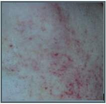
A Hiperhidratação endovenosa e alopurinol, seguidos de quimioterapia.
B Observação para casos mais leves, corticosteroide ou imunoglobulina para casos mais graves.
C Vitamina K para casos mais leves, plasma fresco congelado para casos mais graves.
D Expansão volêmica com NaCl 0,9% associada a cefalosporina de terceira geração.
Questão 70 · Pediatria · Hipocalcemia · Tratamento · 4000140677Menino, 1 mês de vida, nascido de termo, sem intercorrências no parto é trazido ao pronto atendimento devido hipoatividade e sonolência. Mãe refere que está aguardando nova amostra do teste do pezinho, pois o primeiro (abaixo) veio alterado. Ao exame clínico, criança em regular estado geral, anictérico, acianótico, mucosas secas, fontanela algo deprimida, tempo de enchimento capilar de 4 segundos. FC: 140 bpm; FR: 40 irpm; PA: 72/40 mmHg; Saturação: 96% em ar ambiente. Restante do exame sem alteração. Obtidos exames complementares, com os seguintes resultados: ECG: Intervalo QT corrigido: 0,38 Gasometria venosa: pH: 7,50; PaO2: 40 mmHg, pCO2: 45 mmHg, HCO3-: 32 mEq/L, Saturação: 80% Sódio 127 mEq/L; Cálcio iônico: 1,08; Potássio 3,0 mEq/L; Cloro 82 mEq/L. Qual é o tratamento indicado para correção dos distúrbios hidroeletrolíticos apresentados?
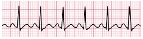
A Cloreto de potássio 19,1% 0,5mEq/kg endovenoso em 1 hora.
B Gluconato de cálcio 10% 2mL/kg endovenoso em 5 a 10 minutos.
C Hidrocortisona 100 mg/m2 endovenoso em bolus.
D Cloreto de sódio 0,9% 20 mL/kg endovenoso em 20 minutos.
Questão 71 · Manejo Clínico · Neuropediatria · Manejo Clínico · 4000140673Menina, 1 ano e 7 meses de idade, previamente hígida, deu entrada no pronto atendimento pois há cerca de uma hora estava correndo quando colidiu contra a lateral da mesa de jantar. Apresentou choro intenso seguido de um episódio de vômito. Nega perda de consciência. Quando questionada sobre dor, a menor aponta para a testa e chora. Ao exame clínico, criança em bom estado geral, corada, hidratada, chorosa. FC: 110 bpm, PA: 96/50 mmHg, FR: 25 irpm. Movimenta os quatro membros normalmente. Região frontal conforme imagem abaixo. Frente ao quadro apresentado, qual é a conduta?
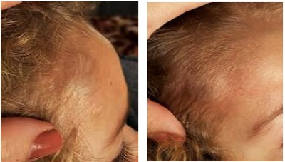
A Realizar de tomografia de crânio sem contraste com sedação.
B Administrar anti-emético e manter observação hospitalar por 6 horas.
C Liberar a criança com analgesia e orientações sobre sinais de alarme.
D Aplicar compressa fria local e solicitar radiografia de crânio duas incidências.
Questão 72 · Neuropediatria · Pediatria · Crises Epilépticas · 4000140670Menina, 1 ano de idade, com antecedente de prematuridade, epilepsia, hidrocefalia e derivação ventrículo peritoneal colocada no primeiro mês de vida, iniciou quadro de tosse, coriza hialina e febre há um dia. Há cerca de 30 minutos, começou a apresentar crise epiléptica tônico-clônica generalizada sendo levada a um serviço de emergência. Na admissão, foi colocada em sala de emergência e monitorizada. Oferecido oxigênio com máscara de Venturi 50%. Inicialmente recebeu uma dose de midazolam intramuscular e, após obtenção de acesso venoso, uma dose de diazepam e antitérmico. A crise cessou e, na reavaliação, a paciente se apresenta em regular estado geral, não responsiva, hidratada, descorada 1+/4+, FC: 106 bpm, PA: 82/40 mmHg, tempo de enchimento capilar 2 segundos, ausculta pulmonar com murmúrios vesiculares e expansibilidade reduzidos bilateralmente, FR: 10 ipm, SatO2: 90% com a Venturi 50%, sem tiragens. Temperatura 37,8ºC. Glicemia capilar: 68 mg/dL. Sem outras alterações ao exame clínico. Qual é a conduta emergencial nesse momento?
A Administrar flumazenil endovenoso.
B Iniciar ventilação com pressão positiva.
C Realizar elevação da cabeceira e infundir manitol.
D Inserir derivação ventricular externa de urgência.
Questão 73 · Ensaios clínicos · Outras f ormas de controle de vieses · 4000140667Qual dos procedimentos abaixo reduz a ocorrência de viés de seleção em um ensaio clínico?
A Realizar a análise por intenção de tratamento.
B Atingir número mínimo da amostra calculada.
C Realizar a sequência alternada de entrada de indivíduos na alocação dos grupos.
D Realizar o cegamento do efeito da terapia testada.
Questão 74 · Endocrinologia · Obesidade e síndrome metabólica · 4000140664A linha de cuidado da pessoa com sobrepeso e obesidade prevê:
A O encaminhamento dos pacientes para os serviços de maior complexidade para aumentar as chances de sucesso dos tratamentos disponíveis nesse nível de atenção à saúde.
B A realização de exames laboratoriais a cada 3 meses para monitoramento das comorbidades associadas ao excesso de peso.
C A integração em todos os níveis de atenção à saúde do sistema de saúde regionalizado.
D A convocação das pessoas com excesso de peso quando elas se encontram nas fases iniciais de ganho de peso.
Questão 75 · Importância do aleitamento materno · Pediatria · Orientações gerais de puericultura Sinais de alerta · 4000140662O agente comunitário traz para a reunião da equipe de Saúde da Família o caso de uma puérpera de 17 anos de idade que está em casa com seu recém-nascido (RN) de 3 dias de vida, após alta do Hospital Universitário naquele dia. Fez pré-natal na Unidade Básica de Saúde a partir dos cinco meses de gestação, sem intercorrências e os exames de rotina foram normais. Segundo informações do hospital, a criança nasceu de parto vaginal, a termo, Peso= 2.800g, sem intercorrências. Saiu do hospital com aleitamento materno exclusivo, recebeu BCG e uma dose da vacina para o vírus da hepatite B, foi registrada. Qual é a medida imediata que deve ser adotada neste caso?
A Agendar para a semana seguinte uma consulta médica com o pediatra do Hospital Universitário pois a primeira semana de vida é o período de maior risco para esse RN de mãe adolescente.
B Agendar uma consulta com o médico de família quando o RN fizer 1 mês de vida, pois a gestação foi de baixo risco, não houve intercorrências no parto e a criança nasceu saudável.
C Inscrever a puérpera no grupo de apoio às mães adolescentes que fazem encontros semanais, para que ela possa receber orientações sobre os cuidados com o RN.
D Realizar uma visita domiciliar ainda na primeira semana de vida do RN para verificar a saúde do binômio mãe-filho, e garantir a manutenção da amamentação exclusiva.
Questão 76 · Avaliação em Saúde · 4000140661Assinale qual dos indicadores abaixo é utilizado para avaliar o desempenho da Atenção Básica.
A Taxa de mortalidade por doenças respiratórias no ano.
B Frequência de casos vítimas de violência doméstica no mês
C Proporção de encaminhamentos para internação hospitalar no ano.
D Proporção de atendimentos a crianças nascidas a termo por mês.
Questão 77 · Ensino e pesquisa médica · 4000140657De acordo com as Diretrizes Curriculares Nacionais para o curso de medicina é fundamental que a formação médica promova o desenvolvimento de competências nas áreas de atenção, gestão e educação em saúde. Dentre outras, estas competências incluem:
A Prática do cuidado centrado na pessoa, organização do processo de trabalho, comunicação.
B Responsabilidade social, tolerância ao estresse, trabalho interprofissional.
C Construção coletiva de conhecimento, trabalho em equipe, tolerância à frustração.
D Priorização de problemas, prática do cuidado centrado na pessoa, praticar a liderança verticalizada nas relações interpessoais.
Questão 78 · Atenção Primária à Saúde APS no Brasil · Política Nacional de Atenção Básica PNAB · 4000140655Para que o sistema de saúde brasileiro se torne mais resolutivo, é fundamental que o nível de Atenção Primária à Saúde:
A Realize ações rotineiras de baixa complexidade no cuidado da saúde das pessoas e famílias de baixa renda e encaminhe para os níveis secundário e terciário do sistema os problemas de difícil solução.
B Ordene-se segundo os atributos de porta de entrada para o sistema, de acolhimento às demandas de saúde de pessoas, famílias e comunidades, de coordenação do cuidado e de longitudinalidade.
C Exerça prioritariamente ações preventivas e de promoção da saúde, atendendo às demandas diagnósticas, terapêuticas e de reabilitação quando houver recursos financeiros suficientes.
D Seja o responsável por combater os determinantes sociais do processo saúde-doença-cuidado no nível individual, da família e da comunidade.
Questão 79 · Relação MédicoPaciente · 4000140652Mulher de 65 anos de idade, oriunda de região rural e vivendo em São Paulo há dois anos procura a Unidade Básica de Saúde porque está com sangramento vaginal esporádico há seis meses. Estava com medo de ir à consulta médica porque nunca fez exame ginecológico e tem muita vergonha. Acha que o sangramento acontece porque a “mãe do corpo” está muito baixa e vem tomando chá sem melhora. O caso remete à importante tarefa do cuidado em saúde, particularmente na atenção primária, que é a construção de contatos terapêuticos culturalmente sensíveis. Nesse sentido, é correto afirmar que:
A É necessário desmistificar respeitosamente a noção de “mãe do corpo” para que o contato terapêutico possa ser bem-sucedido.
B É necessário estabelecer as racionalidades terapêuticas diversas para uma boa relação médico-paciente.
C É necessário adaptar os termos usados pelos profissionais ao universo cultural dos pacientes para que a explicação correta do adoecimento e, em consequência, a do tratamento supere medos e constrangimentos.
D É necessário relacionar a experiência da doença vivida pelos pacientes com o modo como é compreendida pelos profissionais de saúde para que a interculturalidade possa ser produtiva.
Questão 80 · Processo saúdedoença · 4000140649Um médico de uma equipe de Saúde da Família, notando o aumento do número de casos de AIDS na área de cobertura de sua Unidade Básica de Saúde, decide realizar um inquérito populacional na região para investigar a vulnerabilidade da população local à infecção pelo HIV. Considerando-se os modos de exposição à infecção pelo HIV e as três dimensões utilizadas nas análises de vulnerabilidade, assinale a alternativa que apresenta o aspecto relevante a ser incluído no estudo e a dimensão de vulnerabilidade a que está relacionado:
A Acesso a meios de comunicação (dimensão programática).
B Relações de gênero (dimensão social).
C Acesso a testagem e aconselhamento (dimensão individual).
D Qualidade dos serviços de saúde (dimensão social).
Questão 81 · Princípios e Diretrizes do Sistema Único de Saúde SUS · 4000140647Uma paciente HIV-positiva está em tratamento e tem um plano de saúde oferecido pela empresa na qual trabalha. Ela é acompanhada por infectologista em consultório particular e realiza exames cobertos por seu convênio médico. Todos os meses, a paciente retira gratuitamente medicamentos antirretrovirais dispensados por serviço público de referência do Sistema Único de Saúde (SUS). Qual é o princípio do SUS que garante às pessoas o acesso a esses medicamentos?
A Equidade.
B Ressarcimento.
C Universalidade.
D Hierarquização.
Questão 82 · Financiamento do SUS · 4000140646Sobre o financiamento do sistema de saúde brasileiro, assinale a alternativa correta.
A Os gastos públicos com saúde, oriundos de impostos e contribuições sociais, representam aproximadamente 43% dos gastos totais com saúde no Brasil e o restante é gasto privado, com planos de saúde, compra de medicamentos e gastos diretos de indivíduos e famílias.
B Do total de gastos do sistema de saúde, o percentual de gastos públicos é dirigido somente para os 80% da população que usam exclusivamente o sistema público.
C O financiamento da saúde suplementar é composto em maior parte pelo desembolso de indivíduos e famílias e em menor parte por empregadores e associações que financiam planos de saúde coletivos.
D Na composição do orçamento público federal da saúde, o item de maior despesa do Sistema Único de Saúde é a assistência farmacêutica (fornecimento de medicamentos à população).
Questão 83 · Vigilância Sanitária · 4000140644A Vigilância Sanitária (VS) é uma das atividades exercidas pelo Sistema Único de Saúde (SUS). Ela é definida como as “ações capazes de eliminar, diminuir ou prevenir riscos à saúde e de intervir nos problemas de saúde decorrentes do meio ambiente, da produção e circulação de bens e da prestação de serviços de interesse da saúde”. Entre as áreas de atuação da VS existem áreas de intersecção com a vigilância epidemiológica, dentre elas estão a vigilância de:
A Alimentos.
B Efeitos adversos de fármacos.
C Água para consumo humano.
D Qualidade do ar.
Questão 84 · Epidemiologia · Dermatologia · 4000140643Quanto à ocorrência de hanseníase no Brasil, é correto afirmar que:
A A taxa de detecção está em queda no país.
B A doença é mais frequente em adultos jovens e adolescentes.
C A alta proporção de casos multibacilares indica diagnóstico tardio.
D A proporção de casos
Questão 85 · Transmissão vertical · 4000140640Em relação à infecção pelo vírus da hepatite B, assinale a alternativa correta:
A A infecção confere imunidade duradoura por toda a vida.
B A infecção perinatal apresenta maior risco de cronificação.
C Anti-HBe reagente é indicador de menor risco de transmissão.
D Anti-HBs reagente é indicador de maior risco de transmissão.
Questão 86 · Inf ectividade · Virulência · Patogenicidade · 4000140637No verão 2014-2015, observou-se no Brasil a emergência de um agente infeccioso até então não descrito nas Américas, o vírus Zika. A maioria das infecções é assintomática. Os quadros sintomáticos caracterizam-se pela presença de exantema morbiliforme e hiperemia de conjuntivas, de curta duração, e frequentemente sem febre. Um estudo realizado em Salvador (BA) estimou que 70% da população foi infectada na primeira onda epidêmica. Cerca de um ano após a emergência, descreveu-se no país o quadro da síndrome congênita pelo vírus Zika, resultante da transmissão vertical. A síndrome congênita caracteriza-se pelo intenso comprometimento da neurogênese, resultando em microcefalia, hidrocefalia, hipoplasia do cerebelo, dilatação ventricular, comprometimento oto-oftalmológico e artrogripose. As propriedades de infectividade, patogenicidade e virulência do vírus Zika podem ser classificadas respectivamente como:
A Alta, baixa, alta.
B Alta, alta, alta.
C Baixa, alta, baixa.
D Baixa, baixa, alta.
Questão 87 · Prevenção Quaternária · 4000140634Você, médico de uma Unidade Básica de Saúde, recebe uma paciente de 30 anos de idade, sem fatores de risco para câncer de mama, mas que acredita que fazer exames preventivos é a melhor forma de se cuidar. Por isso, solicita que você peça uma mamogra a de rotina para ela. No entanto, você considera recusar o pedido da paciente quanto à solicitação da mamografia pois isto configura uma medida de prevenção: Assinale a alternativa correta:
A Primária.
B Secundária.
C Terciária.
D Quaternária.
Questão 88 · Direitos humanos · 4000140632Você está atendendo a consulta de pré-natal de uma gestante de baixo risco muito interessada e que faz várias perguntas. A consulta já passou do tempo previsto e você tem muitas pacientes aguardando consulta, mas precisa solicitar os exames de rotina da gestação. Em relação às orientações e ao consentimento sobre os exames a serem solicitados, assinale a alternativa correta.
A O consentimento não é mandatório caso você oriente a paciente a se informar sobre os exames, pela internet ou outros meios.
B Você deve sempre informar o que é e para que serve cada um dos exames solicitados e a paciente deve consentir em fazê-los.
C Exames, quando previstos em protocolo do Ministério da Saúde, não necessitam de consentimento do paciente para serem realizados.
D No pré-natal não é necessário consentimento da gestante para a realização dos procedimentos previstos, já que o cuidado da criança é prioritário.
Questão 89 · Política Nacional de Atenção Básica PNAB · Dependência Química · 4000140629Uma médica de família atende muitos casos de dependência química na Unidade Básica de Saúde onde trabalha. Para se capacitar, passou a aplicar escalas de avaliação destes casos. Ao atender um paciente adulto, aplicou um instrumento da Organização Pan-americana da Saúde, cujos resultados foram dois pontos para maconha e 23 para álcool. Para o tratamento do paciente, está prevista a intervenção breve. Considerando os atributos da Atenção Primária à Saúde e as formas de trabalho em equipe previstas pela Estratégia Saúde da Família, a médica de família deve:
A Encaminhar o paciente para a rede especializada.
B Encaminhar o paciente para atendimento pelo Núcleo de Apoio à Saúde da Família (NASF).
C Pedir apoio ao matriciamento.
D Confirmar o diagnóstico com teste toxicológico antes de iniciar o tratamento.
Questão 90 · Estudos de CasoControle · 4000140627A tabela a seguir apresenta os resultados de um estudo caso-controle que teve como objetivo avaliar a associação entre tuberculose e diabetes. Os casos incidentes de tuberculose pulmonar foram selecionados em serviços públicos da cidade de Salvador, assim como seus controles, sem tuberculose pulmonar. A variável “tem diagnóstico de diabetes” foi categorizada em sim e não com base no valor de corte da glicemia capilar proposto pela American Diabetes Association. Tabela X – Casos incidentes de tuberculose pulmonar e seus controles, segundo presença ou não de diabetes mellitus, Salvador. Fonte: Baseado em Pereira SM et al. Rev Saúde Pública 2016;50:82. Obs.: n=número de indivíduos; %=proporção de indivíduos. Assinale a alternativa que apresenta o valor da medida de associação adequada para o desenho do estudo relacionada ao risco de indivíduos com diabetes apresentarem tuberculose, em relação aos não diabéticos.
A 0,37.
B 0,41.
C 2,44.
D 2,67.
Questão 91 · Avaliação em Saúde · 4000140626Com base nos dados da tabela a seguir, assinale a alternativa que representa a ação de maior prioridade para o decréscimo do número de casos de sífilis congênita. Tabela X – Proporção de casos novos de sí lis congênita registrados no sistema de vigilância epidemiológica para o Brasil e o Estado de São Paulo, em 2019. Obs.: * nativivos ou natimortos; ** Penicilina Benzatina em dosagem adequada para a fase clínica da sífilis Fonte: MS/SVS/DCCI em http://indicadoresclinicos.aids.gov.br/
A Aumento da cobertura do pré-natal (maior número de gestantes fazendo pré-natal).
B Campanhas para aumentar a testagem rápida para a sífilis entre gestantes e parceiros.
C Campanhas de conscientização da população acerca da sífilis adquirida e congênita.
D Supervisão e melhoria da qualidade do cuidado prestado no pré-natal.
Questão 92 · Odds Ratio ou Razão de Chances · 4000140625A seleção do grupo controle ideal em estudos de casos e controles sobre malformações congênitas ainda é um ponto de controvérsia entre epidemiologistas. Alguns defendem que o grupo controle deve ser formado por crianças sem malformação congênita, enquanto outros argumentam que o grupo controle ideal deveria ser formado por crianças com uma malformação congênita distinta daquela em estudo. No centro deste debate está a validade interna dos estudos, em particular a ocorrência de dois tipos distintos de erro sistemático (vieses de memória e de seleção). Diante do exposto, assinale a alternativa que indica o efeito esperado dos vieses de memória e de seleção, respectivamente, nos valores de odds ratio (OR) em estudos de caso-controle sobre malformações congênitas.
A Superestimados e subestimados.
B Subestimados e superestimados.
C Ambos sejam superestimados.
D Ambos valores não sofrem influência.
Questão 93 · valor p e intervalo de conf iança · 4000140624Um estudo de coorte foi realizado no Brasil com o objetivo de investigar fatores de risco associados à incidência de dengue sintomática confirmada laboratorialmente. Foi incluída uma amostra de crianças e adolescentes de 2 a 16 anos de idade. Alguns resultados são apresentados na tabela abaixo: Tabela X – Distribuição dos participantes segundo diagnóstico de dengue sintomática, laboratorialmente confirmado. e variáveis selecionadas, risco relativo (RR) e seu intervalo de 95% de confiança (IC95%), Estado de São Paulo, 2014 – 2018 Obs.: n*=número de indivíduos; NR#=não reagente; Dengue^=diagnóstico de dengue sintomática, laboratorialmente confirmado. Assinale a alternativa correta quanto aos fatores significativamente associados à incidência de dengue sintomática confirmada laboratorialmente:
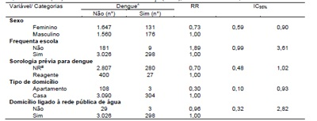
A Morar em apartamento foi um fator de proteção.
B Sexo feminino foi um fator de risco.
C Ter sorologia prévia reagente foi um fator de proteção.
D Frequentar escola foi um fator de risco.
Questão 94 · Curvas Epidêmicas · 4000140622Uma das preocupações dos órgãos públicos da Saúde no enfrentamento da pandemia causada pelo SARS-CoV-2 é a segunda onda epidêmica. Assinale a alternativa que apresenta o fator que influencia diretamente a ocorrência de uma nova onda epidêmica.
A A taxa de letalidade da covid-19 na primeira onda.
B A proporção de suscetíveis na população.
C A testagem sorológica em massa.
D A subnotificação dos casos confirmados de covid -19.
Questão 95 · Ensaios comunitários ou Intervenções comunitárias · 4000140619Filtro especial identif icando o tipo de estudo epidemiológico pela descrição da metodologia Em 2017, foi conduzido na cidade de Kampala, Uganda, um estudo envolvendo 1.583 indivíduos escolhidos por sorteio, moradores de oito locais distantes entre si. Em quatro destes locais foi implantado um programa de educação denominado “estratégia de aceitação”, que objetivava maior resposta comunitária de apoio às vítimas de violência doméstica. Quatro anos depois, a metodologia de amostragem foi repetida nos mesmos locais, envolvendo um total de 2.532 indivíduos. Nas duas ocasiões, foram obtidos dados sobre a ocorrência de violência doméstica (desfecho) e fatores de risco e de proteção. As análises dos dados incluíram o ajuste por intenção de tratamento no nível de cluster. Quando os resultados dos locais que implantaram o programa foram comparados com os resultados dos locais que não implantaram, observou-se que as mulheres que sofreram violência nos locais da intervenção tiveram maior chance de receber respostas comunitárias de apoio. Baseado em BMC Med 12, 122 (2014). Assinale a alternativa que descreve o desenho epidemiológico deste estudo.
A Ecológico.
B Ensaio clínico randomizado.
C Ensaio de comunidade.
D Caso-controle.
Questão 96 · Valor Preditivo Positivo · Dif erença entre especif icidade e valor preditivo negativo · 4000140617Valor Preditivo Negativo Considere que um determinado teste diagnóstico, de uma infecção, está sendo utilizado em uma cidade onde sua prevalência é 10%. O que se espera dos valores preditivos positivo (VPP), negativo (VPN) e da especi cidade (E) deste teste, se o mesmo for aplicado em outra cidade onde a prevalência da infecção é 20%?
A Diminuirá; aumentará; aumentará.
B Diminuirá; aumentara; será mantida.
C Aumentará; aumentará; diminuirá.
D Aumentará; diminuirá; será mantida.
Questão 97 · COVID 19 · Aplicação Clínica · 4000140616Homem de 72 anos de idade está internado em Unidade de Terapia Intensiva há dois dias, por diagnóstico de covid-19. O quadro iniciou-se há oito dias, com febre, anosmia, odinofagia e tosse. O diagnóstico foi feito quatro dias depois, e devido a saturação de oxigênio de 91% em ar ambiente foi internado em enfermaria. Há 2 dias evoluiu com insu ciência respiratória demandando transferência à UTI e intubação orotraqueal. O médico assistente se prepara para avaliar o paciente no dia de hoje. Baseado no quadro exposto na questão anterior, qual das condutas abaixo será mais e caz para corrigir a alteração encontrada?
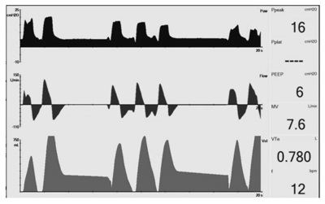
A Aumento do tempo inspiratório.
B Revisão do circuito ventilatório.
C Aumento da PEEP.
D Redução da pressão de pico.
Questão 98 · Conceitos · 4000140614Homem de 72 anos de idade está internado em Unidade de Terapia Intensiva há dois dias, por diagnóstico de covid-19. O quadro iniciou-se há oito dias, com febre, anosmia, odinofagia e tosse. O diagnóstico foi feito quatro dias depois, e devido a saturação de oxigênio de 91% em ar ambiente foi internado em enfermaria. Há 2 dias evoluiu com insu ciência respiratória demandando transferência à UTI e intubação orotraqueal. O médico assistente se prepara para avaliar o paciente no dia de hoje. O paciente está ventilado sob os seguintes parâmetros: Modo controlado a pressão; FiO2 = 40%; PEEP 5 cmH2O; Pressão de pico 17 cmH2O; Tempo inspiratório de 1 segundo; Frequência respiratória de 10 vpm. Você percebe que o paciente está desconfortável e nota o seguinte registro no monitor: Qual é a principal hipótese para a alteração encontrada no monitor?
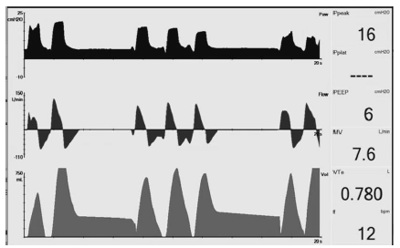
A Vazamento de circuito.
B Líquido no circuito.
C Aprisionamento aéreo.
D Duplo disparo.
Questão 99 · Síndrome do QT longo · 4000140611Homem de 72 anos de idade está internado em Unidade de Terapia Intensiva há dois dias, por diagnóstico de covid-19. O quadro iniciou-se há oito dias, com febre, anosmia, odinofagia e tosse. O diagnóstico foi feito quatro dias depois, e devido a saturação de oxigênio de 91% em ar ambiente foi internado em enfermaria. Há 2 dias evoluiu com insu ciência respiratória demandando transferência à UTI e intubação orotraqueal. O médico assistente se prepara para avaliar o paciente no dia de hoje. Uma vez dentro do “box”, o médico ouve o alarme do monitor soar e detecta a arritmia abaixo. A avaliação e tratamento adequados foram feitos e a arritmia foi revertida. Considerando os itens abaixo da prescrição médica do Sr. João, qual item deverá ser suspenso da prescrição?
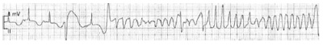
A Azitromicina 500mg SNE 1 x ao dia.
B Ceftriaxone 1g IV 12/12h.
C Inalação com salbutamol 6/6h.
D Terbutalina subcutânea ACM.
Questão 100 · Prevenção · 4000140608Homem de 72 anos de idade está internado em Unidade de Terapia Intensiva há dois dias, por diagnóstico de covid-19. O quadro iniciou-se há oito dias, com febre, anosmia, odinofagia e tosse. O diagnóstico foi feito quatro dias depois, e devido a saturação de oxigênio de 91% em ar ambiente foi internado em enfermaria. Há 2 dias evoluiu com insu ciência respiratória demandando transferência à UTI e intubação orotraqueal. O médico assistente se prepara para avaliar o paciente no dia de hoje. O “box” de isolamento em que o paciente está internado não possui antecâmara. Antes de entrar, o médico já se encontra com uma máscara N95. Ele higieniza as mãos, veste o avental, coloca os óculos de proteção, adentra o box e calça as luvas de procedimento. Com relação à paramentação realizada, assinale a alternativa correta
A Não houve erro de paramentação.
B As mãos deveriam ser higienizadas novamente após a entrada no box.
C A máscara deveria ter sido trocada antes da entrada no box.
D As luvas deveriam ter sido calçadas antes da entrada no box.
Questão 101 · Distúrbios da condução atrioventricular · Cardiologia · 4000140607Mulher de 58 anos de idade vem à unidade básica de saúde pois apresentou quadro de escurecimento visual durante prática de atividade física. Não houve perda da consciência. Não tem antecedentes mórbidos relevantes. No exame clínico, frequência cardíaca 58 bpm. O restante do exame clínico é normal. Realizou o eletrocardiograma apresentado a seguir. Qual é a conclusão do laudo do eletrocardiograma?

A Eletrocardiograma normal.
B Fibrilação atrial de baixa resposta ventricular.
C Bloqueio atrioventricular de 2º grau, Mobitz I.
D Bradicardia sinusal.
Questão 102 · Exames complementares · Cardiologia · 4000140605Qual das valvopatias indicadas a seguir é compatível, quando ocorrida isoladamente, com as alterações presentes neste eletrocardiograma?
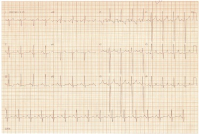
A Insuficiência aórtica.
B Estenose mitral.
C Insuficiência tricúspide.
D Estenose pulmonar.
Questão 103 · Tratamento · 4000140602Mulher de 66 anos de idade, tem antecedentes de obesidade grau 3 e osteoartrose grave de joelhos. Foi levada por seus familiares ao Pronto-Socorro por quadro de desorientação têmporo-espacial e confusão mental, com períodos de agitação intensa há três dias, com piora hoje. Faz uso frequentes de medicações para dores dos joelhos, porém os familiares não sabem referi-las. Ao exame clínico encontra-se em regular estado geral, desidratada +2/+4, febril; agitada, não colaborativa ao exame; pressão arterial 140x90 mmHg, frequência cardíaca 110 bpm, frequência respiratória 24 ipm, temperatura axilar de 38,8oC; sem dé cits neurológicos focais e sem sinais meníngeos; abdome globoso, palpação de massa em hipogástrio com intensa manifestação de dor pela paciente à palpação, sem sinais de peritonite. Restante do exame clínico sem alterações. Glicemia capilar de 140 mg/dL. Qual alternativa traz o conjunto de medidas diagnósticas e terapêuticas iniciais para o quadro agudo da paciente?
A Passagem de sonda vesical de alívio, coleta de urina tipo I e urocultura; quetiapina e dipirona.
B Tomografia de crânio com contraste, coleta de proteína C-reativa e hemograma; diazepam e AAS.
C Tomografia de abdome e pelve, coleta de hemograma e lactato; haloperidol e dipirona.
D Ultrassonografia de abdome e pelve, coleta de hemograma e lactato; risperidona e paracetamol.
Questão 104 · Tratamento no paciente adulto · Endocrinologia · 4000140599Homem de 24 anos de idade, previamente hígido, é levado ao Pronto-Socorro com queda do estado geral, náuseas e vômitos. Há duas semanas tem notado perda de peso (6 kg, aproximadamente 8% do peso inicial). No exame clínico, está sonolento, desidratado +3/+4. Frequência respiratória de 30 ipm, pressão arterial de 90 x 50 mmHg, frequência cardíaca de 120 bpm; abdome ácido, sem sinais de peritonite. O restante do exame clínico é normal. O exame de urina revelou glicosúria 4+/4 e cetonúria 4+/4. A gasometria arterial em ar ambiente evidenciou: pH 7,02; pO2 95 mmHg; pCO2 26 mmHg; bicarbonato 6 mEq/L; Base excess (BE) -10; SatO2 em ar ambiente 99%. K+ 3,8 mEq/L, Na+ 132 mEq/L Cl- 93 mEq/L; Glicemia 400 mg/dL. Considerando a principal hipótese diagnóstica, assinale a alternativa que indica condutas que compõem as primeiras duas horas de atendimento:
A Cloreto de sódio 0,45% EV, insulina NPH subcutânea, KCl 19,1% EV.
B Cloreto de sódio 0,45% EV, insulina regular EV, bicarbonato de sódio 8,4% EV.
C Cloreto de sódio 0,9% EV, insulina NPH subcutânea, bicarbonato de sódio 8,4% EV.
D Cloreto de sódio 0,9% EV, insulina regular EV, KCl 19,1% EV.
Questão 105 · COVID 19 · 4000140595Homem de 68 anos de idade tem insu ciência cardíaca com fração de ejeção de 36%. Está em uso de enalapril 20 mg/dia, furosemida 40 mg/dia, carvedilol 50 mg/dia e espironolactona 25 mg/dia. Durante os últimos meses, persistia com dispneia apenas aos grandes esforços. Procura o pronto-atendimento porque há 7 dias apresenta piora da dispneia (atualmente no repouso), tosse seca e febre baixa (37,9ºC). No exame clínico, está em regular estado geral, consciente e orientado. FC 88 bpm, PA 90x60 mmHg, saturação de oxigênio em ar ambiente: 89%. Ausculta pulmonar com estertores nos em ambas as bases. Durante internação para compensação clínica, o paciente realizou a tomogra a de tórax apresentada a seguir. Qual é a principal hipótese diagnóstica para o quadro agudo? Fonte: http://dx.doi.org/10.36416/1806-3756/e20200114.
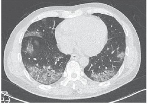
A Insuficiência cardíaca descompensada.
B Infecção por SARS-CoV-2.
C Pneumonia estreptocócica.
D Tromboembolismo pulmonar.
Questão 106 · Bloqueios · 4000140592Homem de 68 anos de idade tem insu ciência cardíaca com fração de ejeção de 36%. Está em uso de enalapril 20 mg/dia, furosemida 40 mg/dia, carvedilol 50 mg/dia e espironolactona 25 mg/dia. Durante os últimos meses, persistia com dispneia apenas aos grandes esforços. Procura o pronto-atendimento porque há 7 dias apresenta piora da dispneia (atualmente no repouso), tosse seca e febre baixa (37,9ºC). No exame clínico, está em regular estado geral, consciente e orientado. FC 88 bpm, PA 90x60 mmHg, saturação de oxigênio em ar ambiente: 89%. Ausculta pulmonar com estertores nos em ambas as bases. O último eletrocardiograma presente em prontuário (realizado há um mês) está apresentado a seguir. Qual é a conclusão do laudo do eletrocardiograma?
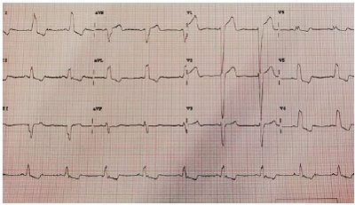
A Bloqueio atrioventricular total.
B Aneurisma ventricular.
C Ritmo juncional.
D Bloqueio de ramo esquerdo.
Questão 107 · Rastreio Câncer Colorretal · Escolha de testes diagnósticos para rastreamento · 4000140590Rastreio populacional Homem de 68 anos de idade, aposentado, vem para consulta em ambulatório geral para avaliação de “check-up”. Tem hipotireoidismo há 10 anos, em uso de levotiroxina 50 mcg ao dia. É tabagista de 1 maço por dia, desde os 15 anos de idade. Quando indagado sobre parar de fumar, entende que o cigarro é a causa dos seus problemas e que gostaria de parar de fumar, mas não se sente preparado para tentar agora, pois ainda precisa dele para aliviar o estresse. No exame clínico, tem peso de 81 kg e altura 150 cm. Pressão arterial: 110 x 76 mmHg. O restante do exame clínico é normal. Traz exames realizados há 2 semanas: Hb: 17 g/Dl; Ht: 48%; Leucócitos: 8400/mm³; Plaquetas: 347 mil/mm³; Glicemia de jejum: 112 mg/dL; Hemoglobina glicada: 6,0%; Colesterol total: 128 mg/dL; LDL: 64 mg/dL HDL: 46 mg/dL; Creatinina: 0,8 mg/dL; Ureia: 35 mg/dL; Na: 140 mEq/L K: 3,9 mEq/L; TSH: 8,8 μU/mL; T4 livre normal. Segundo as recomendações da ser considerados no plano de cuidado deste paciente:
A Radiografia de tórax, pesquisa de sangue oculto nas fezes, USG doppler de aorta abdominal e antígeno prostático específico (PSA).
B Tomografia de tórax de baixa radiação, pesquisa de sangue oculto nas fezes, USG doppler de aorta abdominal e ultrassonografia de tireoide.
C Tomografia de tórax de baixa radiação, colonoscopia e USG doppler de aorta abdominal.
D Radiografia de tórax, colonoscopia e ultrassonografia de tireoide.
Questão 108 · Etapas do tratamento steps · 4000140589Mulher de 28 anos de idade vem à unidade básica de saúde para acompanhamento por asma brônquica, diagnosticada aos 10 anos de idade. Há 2 meses tem crises de falta de ar e tosse seca que melhoram com uso de salbutamol inalatório. Há 45 dias, teve uma crise mais intensa de dispneia associada a chiado, para a qual precisou de atendimento de emergência em Pronto-Socorro. Após a alta, persiste com sintomas diurnos três vezes na semana, com limitação para atividades diárias e sintomas noturnos esporádicos. Fez uso somente de prednisona 40 mg/dia por uma semana após a alta hospitalar. Nega outros sintomas. No exame clínico, está em bom estado geral, corada, hidratada, FC: 80 bpm, FR: 16 ipm, PA: 122 x 86 mmHg. Ausculta pulmonar com murmúrios vesiculares presentes e sibilos expiratórios. O restante do exame clínico é normal. Trouxe espirometria feita há 1 semana, com os seguintes resultados após o uso de broncodilatador: VEF1/CVF: 0,68, VEF1: 70% do predito, com variação pré-para pós-brondilatador de 290 ml (14%). Considerando o atual estágio de controle da asma da paciente, qual é o tratamento de primeira linha para o caso, de acordo com o
A MANUTENÇÃO/Formoterol+budesonida RESGATE/Formoterol+budesonida
B MANUTENÇÃO/Montelucaste RESGATE/Fenoterol
C MANUTENÇÃO/Formoterol+budesonida RESGATE/Fenoterol
D MANUTENÇÃO/Montelucaste RESGATE/Formoterol +budesonida
Questão 109 · Inf ectologia · Diagnóstico e tratamento de erisipela e celulite · 4000140583Homem de 17 anos de idade procura o Pronto-Socorro por lesão em perna esquerda após trauma local há 4 dias. Hoje está com febre (39,5ºC). Foto da lesão mostrada a seguir. Considerando o principal agente etiológico para o quadro, qual das alternativas abaixo traz exclusivamente medicamentos que são eficazes para tratamento como monoterapia?
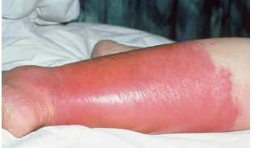
A Clindamicina, cloranfenicol, tigeciclina e amicacina.
B Linezolida, vancomicina, oxacilina, teicoplanina.
C Penicilina, oxacilina, claritromicina e gentamicina.
D Metronidazol, vancomicina, oxacilina e linezolida.
Questão 110 · Quadro Clínico e Indicações de Tomograf ia de Crânio · 4000140577Homem de 47 anos de idade foi resgatado pelos bombeiros após colisão auto x auto, no qual era o condutor de um dos veículos, e trazido ao Pronto-Socorro de um hospital terciário. Quatro outras pessoas foram feridas, uma delas falecida no local. Segundo a equipe de resgate, testemunhas viram o paciente convulsionar após o acidente. Após a estabilização inicial adequada, realizou tomografia computadorizada de crânio, mostrada a seguir. Quais são as alterações presentes na tomografia?
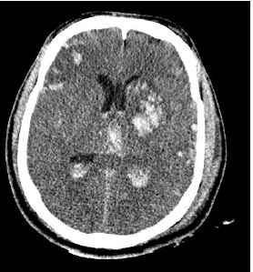
A Hemorragia parenquimatosa, hemorragia intraventricular e lesão axonal difusa.
B Hematoma extradural, hemorragia extra-axial e intraventricular.
C Aneurisma cerebral roto com hemorragia parenquimatosa e meníngea.
D Múltiplas metástases cerebrais, com efeito de massa.
Questão 111 · Manejo do nódulo abordagem diagnóstica · 4000140573Mulher de 65 anos de idade é atendida no ambulatório de clínica médica por queixa de tosse crônica. Refere que o quadro iniciou há 1 ano, quando realizou tomogra a de tórax (imagem à esquerda) como parte da investigação diagnóstica. Nega antecedentes mórbidos relevantes. O exame clínico é normal. Realizou nova tomogra a de tórax há 15 dias (imagem à direita). Qual é o próximo passo?

A Prescrever esquema RHZE.
B Prescrever anfotericina.
C Solicitar lavado broncoalveolar.
D Solicitar biópsia pulmonar.
Questão 112 · Porf irias · 4000140569Mulher de 20 anos de idade está internada em um hospital terciário por paralisia ácida ascendente, iniciada há 3 semanas e progredindo ao longo de 7 dias. Não há acometimento de nervos cranianos, antecedente de doença infecciosa ou febre. Não consegue deambular, mas não há acometimento respiratório. Há 15 dias, desenvolveu abdome agudo que resultou em laparotomia branca. Durante o pós-operatório, apresentou crise convulsiva. Tem antecedente pessoal de surto psicótico ocorrido há 1 ano. Considerando a principal hipótese diagnóstica, qual é o próximo passo?
A Prescrever pulsoterapia com Metilprednisolona.
B Solicitar PCR para herpes no liquor.
C Solicitar porfobilinogênio urinário.
D Prescrever imunoglobulina EV ou plasmaferese.
Questão 113 · Neurologia · Demência Frontotemporal · Psiquiatria · 4000140567Médico de 57 anos de idade veio trazido pela esposa à unidade básica de saúde por alteração do comportamento há dois anos. Antes disso era uma pessoa funcional, e não tinha doenças prévias diagnosticadas. O quadro iniciou com irritabilidade e impulsividade, às vezes parecendo que tinha “perdido o freio mental”, falando o que “vinha na cabeça”. Também passou a comer muito doce, algo que não era comum. Durante toda a consulta, o paciente demonstrava-se inquieto, e às vezes fazia comentários jocosos. Na avaliação cognitiva, apresentava respostas impulsivas e estava um pouco desatento. No mini exame do estado mental, ele fez 26 pontos (perdeu três pontos nas subtrações seriadas e um no comando verbal). O exame clínico não tem outras alterações. Qual é a hipótese diagnóstica mais provável?
A Demência da doença de Alzheimer.
B Transtorno Afetivo Bipolar.
C Transtorno de personalidade.
D Demência frontotemporal.
Questão 114 · Tratamento Sintomático · Neurologia · 4000140560Mulher de 23 anos de idade vem ao Pronto-Socorro com cefaleia contínua há quatro dias. A dor inicialmente era temporal esquerda de moderada intensidade, mas hoje passou a ser holocraniana, de forte intensidade, e associada a náuseas e fotofobia. Nestes quatro dias, medicou-se apenas com dipirona. Refere que tem cefaleia com características semelhantes, mas de fraca intensidade, pelo menos duas a três vezes por mês. Não usa nenhuma medicação contínua. Sem antecedentes patológicos relevantes. O exame clínico (incluindo o exame neurológico) é normal. Na chegada ao Pronto-Socorro recebeu dipirona, cetoprofeno e metoclopramida endovenosa, sem melhora após duas horas. Qual alternativa representa a melhor opção terapêutica?
A Morfina.
B Metilprednisolona.
C Tramadol.
D Clorpromazina.
Questão 115 · Transtorno do Humor Bipolar THB · 4000140557Um estudante de biologia de 24 anos de idade é trazido por sua mãe e seu irmão ao Pronto-Socorro. Nas últimas duas semanas, o estudante tem ficado progressivamente mais agitado, inquieto, dormindo menos e falando rápido, às vezes difícil de entender. Há dois dias começou a falar que descobriu a cura para a covid-19, tendo enviado várias mensagens eletrônicas para diferentes jornais, instituições públicas e embaixadas. Diz agora que aguarda a ligação de ministros da saúde de vários países para conversar sobre sua descoberta. Quando questionado pelo irmão sobre esses fatos, cou muito irritado e tentou agredi-lo sicamente. A família diz que o paciente sempre foi estudioso, trabalhador, carinhoso com os pais e é amigo do irmão. Aos 20 anos de idade, apresentou quadro depressivo e foi tratado com medicamento, cujo nome os familiares não se recordam. Não há antecedentes familiares mórbidos relevantes. Qual é a principal hipótese diagnóstica?
A Transtorno obsessivo compulsivo.
B Esquizofrenia Hebefrênica.
C Transtorno Afetivo Bipolar.
D Transtorno de Personalidade.
Questão 116 · Psicof armacologia · Síndrome Extrapiraminal SEP · 4000140553Homem de 24 anos de idade teve um quadro psicótico de início agudo há dois dias. Foi levado ao Pronto-Socorro por agitação psicomotora, onde recebeu haloperidol IM e prescrição para uso de haloperidol 10 mg/dia por via oral. Vem à consulta apresentando piora da agitação, não consegue se manter sentado durante a entrevista. Fica em pé balançando o corpo de um lado para o outro e esfrega as mãos com uma fisionomia angustiada. Qual é a conduta para a principal hipótese diagnóstica neste momento?
A Ministrar benzodiazepínico e substituir antipsicótico.
B Aumentar a dose do antipsicótico e reavaliar em 2 semanas.
C Associar medicação anticolinérgica e manter antipsicótico.
D Suspender antipsicótico e fazer eletroconvulsoterapia.
Questão 117 · Dependência de Álcool · Dependência Química · 4000140550A embriaguez patológica caracteriza-se por:
A Ingestão compulsiva de grandes quantidades de álcool em fases bem delimitadas de tempo com alteração da lucidez de consciência.
B Ingestão de pequenas doses de álcool, alucinação tipo macrozoopsia concomitante e convulsões sub-entrantes.
C Ingestão de grandes quantidades de álcool, acompanhada de euforização do humor seguida da fase comatosa, com relaxamento esfincteriano.
D Ingestão de pequenas doses de álcool, crespuscularização da consciência e amnésia lacunar.
Questão 118 · Dermatomiosite · 4000140549Mulher de 50 anos de idade procura o ambulatório de clínica médica com queixa de fraqueza muscular proximal de membros superiores e inferiores iniciada há 2 meses, com poliartrite simétrica de pequenas articulações e lesões de pele ilustradas na figura a seguir. Sobre a principal hipótese diagnóstica, assinale a alternativa correta:

A A doença caracteriza-se por fraqueza muscular, todavia, mialgia é sintoma raro.
B A maioria dos pacientes apresenta lesões cutâneas sem comprometimento muscular.
C Sugere-se rastreamento para neoplasias, sendo maior o risco nos primeiros anos após diagnóstico da doença.
D Acometimento pulmonar deve fazer pensar em sobreposição com outras doenças, como Esclerose Sistêmica.
Questão 119 · Manif estações renais · 4000140548Mulher de 27 anos de idade está em acompanhamento em ambulatório de serviço de referência por lúpus eritematoso sistêmico diagnosticado há 2 anos. Comparece em consulta queixando-se de edema progressivo de membros inferiores, urina espumosa e redução progressiva do volume urinário há 20 dias. Atualmente está em uso de prednisona 10 mg/dia e Azatioprina 150 mg/dia. No exame clínico, PA 150x90 mmHg, FC 100 bpm, FR 20 ipm, Temperatura axilar 36,5°C. Edema depressível de membros inferiores 2+/4+, edema de face +/4+. Não há outras alterações no restante do exame clínico. Considerando o quadro atual da paciente, qual das alternativas abaixo traz associações compatíveis entre a classificação da doença e os achados histológicos e laboratoriais?
A Classificação/ Proliferativa difusa Achados histológicos e laboratoriais/ 70% de glomérulos acometidos por proliferação celular na microscopia ótica; redução do C3 sérico, proteinúria > 3g/dia
B Classificação/ Proliferativa focal Achados histológicos e laboratoriais/30% de glomérulos acometidos por proliferação celular na microscopia ótica; aumento do C3 sérico, hematúria e proteinúria entre 1 e 3 g/dia.
C Classificação/Membranosa Achados histológicos e laboratoriais/Espessamento da cápsula de Bowman, cilindros hemáticos numerosos, proteinúria entre 1 e 3 g/dia
D Classificação/Proliferativa mesangial Achados histológicos e laboratoriais/Expansão da matriz mesangial, insuficiência renal rapidamente progressiva, proteinúria > 3g/dia
Questão 120 · Osteoartrite OA · 4000140547Homem de 60 anos de idade procura a unidade básica de saúde queixando-se de dor protocinética e após caminhadas em joelhos há 5 anos. O quadro é acompanhado de dor nas mãos, principalmente após esforços, com episódios de rigidez matinal de 15 minutos. No exame clínico dos membros encontram-se joelhos com desvio em varo bilateral, com pequeno derrame articular à esquerda. Hipotro a muscular de quadríceps bilateralmente (mais acentuada à esquerda), além de crepitação aos movimentos de flexão acima de 90 graus. Há nódulos de Heberden e Bouchard em mãos. Considerando a principal hipótese diagnóstica, marque a correta: Respostas: 1 12 23 34 45 56 67 78 89 100 111
A Os estudos mais recentes mostram que a hidroxicloroquina é eficaz.
B Anti-inflamatórios tópicos estão recomendados.
C Glicosamina e condroitina melhoram a dor e evitam dano estrutural.
D A diacereína está recomendada pelas principais diretrizes da doença.